<!doctype html>
<html lang="en">
<head>
  <meta charset="utf-8">
  <meta name="viewport" content="width=device-width, initial-scale=1">
  <title>arxiv digest — 2026-08-12</title>
  <style>
:root {
  --bg: #ffffff;
  --fg: #1f2328;
  --muted: #59636e;
  --border: #d0d7de;
  --card: #f6f8fa;
  --link: #0969da;
}
body {
  max-width: 980px;
  margin: 0 auto;
  padding: 2rem 1rem 5rem;
  font-family: -apple-system, BlinkMacSystemFont, "Segoe UI", Helvetica, Arial, sans-serif;
  line-height: 1.55;
  color: var(--fg);
  background: var(--bg);
}
a { color: var(--link); }
img { max-width: 100%; height: auto; }
pre, code { background: var(--card); border-radius: 6px; }
pre { padding: 1rem; overflow-x: auto; }
blockquote { border-left: 4px solid var(--border); padding-left: 1rem; color: var(--muted); }
details { margin: 0.6rem 0; }
summary { cursor: pointer; font-weight: 600; }
.paper-figures-scroll {
  display: flex;
  gap: 1rem;
  overflow-x: auto;
  overscroll-behavior-x: contain;
  padding: 0.75rem 0.25rem 1rem;
  margin: 1rem 0 1.25rem;
  border-top: 1px solid var(--border);
  border-bottom: 1px solid var(--border);
  scroll-snap-type: x proximity;
}
.paper-figure-card {
  flex: 0 0 min(260px, 72vw);
  scroll-snap-align: start;
  background: var(--card);
  border: 1px solid var(--border);
  border-radius: 12px;
  padding: 0.55rem;
}
.paper-figure-card img {
  display: block;
  width: 100%;
  max-height: 240px;
  object-fit: contain;
  background: white;
  border-radius: 8px;
}
.paper-figure-caption {
  display: block;
  margin-top: 0.5rem;
  color: var(--muted);
  font-size: 0.85rem;
}
.figure-strip-hint {
  color: var(--muted);
  font-size: 0.9rem;
  margin-bottom: -0.3rem;
}
</style>
  <!-- MathJax: renders $...$ inline math and $$...$$ display math, plus
       \(...\) and \[...\]. Loaded from the official CDN; works offline
       once cached. Configured to skip code/pre blocks so arxiv IDs that
       look like dollar amounts don't get mangled. -->
  <script>
    window.MathJax = {
      tex: {
        inlineMath: [['$', '$'], ['\\(', '\\)']],
        displayMath: [['$$', '$$'], ['\\[', '\\]']],
        processEscapes: true,
        processEnvironments: true
      },
      options: {
        skipHtmlTags: ['script', 'noscript', 'style', 'textarea', 'pre', 'code'],
        ignoreHtmlClass: 'tex2jax_ignore',
        processHtmlClass: 'tex2jax_process'
      }
    };
  </script>
  <script id="MathJax-script" async
    src="https://cdn.jsdelivr.net/npm/mathjax@3/es5/tex-chtml.js"></script>
</head>
<body>
<header style="background-color: #333; color: white; padding: 15px; margin-bottom: 20px;">
  <h1 style="margin: 0; font-size: 24px;">
    <a href="https://ochelpan.github.io/arXiv_clean/" style="color: white; text-decoration: none;">Main</a>
  </h1>
</header>

<h1>Daily arXiv Report</h1>

<hr>
<p>
<a href="index.html">← Index</a>
 · <a href="papers_06.html">← Previous</a> · <a href="papers_08.html">Next →</a>
</p>
<hr>

<h2>Papers 121–140</h2>
<p><a id="paper-2608.09674"></a></p>
<h3 id="phase-error-estimation-for-quantum-key-distribution-with-leaky-receivers"><a href="http://arxiv.org/abs/2608.09674v1">Phase-error estimation for quantum key distribution with leaky receivers</a></h3>
<p><strong>Authors:</strong> Álvaro Navarrete, Margarida Pereira, Guillermo Currás-Lorenzo, Akihiro Mizutani, Marcos Curty, Kiyoshi Tamaki<br>
<strong>Type:</strong> theory · <strong>Category:</strong> quantum information and computing · <strong>PDF:</strong> <a href="https://arxiv.org/pdf/2608.09674v1">https://arxiv.org/pdf/2608.09674v1</a><br>
<strong>Analysis basis:</strong> full PDF text, analyzed in chunks
<strong>Topic relevance:</strong> <code>quantum measurements</code> <strong>2/5</strong></p>
<div class="figure-strip-hint">↔ Scroll figures horizontally</div>
<div class="paper-figures-scroll">
<figure class="paper-figure-card">
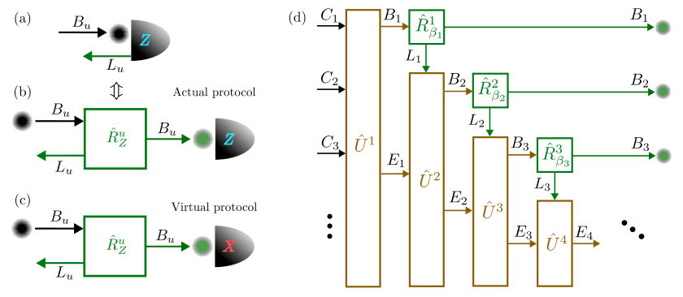
<figcaption class="paper-figure-caption"><b>Fig 1.</b> Figure 1. The isometry modeling the information leakage is designed to commute with Bob’s measurement, and therefore their order can be swapped without changing the observed statistics. Thus, the actual scenario (a), in which Bob first measures Bu and the leakage system Lu is generated afterwards, is equivalent to a fictitious scenario (b) in which the leakage isometry is applied first and Bob then measures the resulting system. In the virtual protocol (c), Bob measures the output system Bu of ˆRu Z in the X basis, {|0X⟩, |1X⟩}. (d) Eve’s most general attack in the presence of receiver-side leakage.</figcaption>
</figure>
<figure class="paper-figure-card">
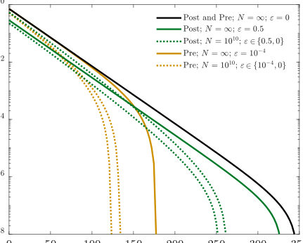
<figcaption class="paper-figure-caption"><b>Fig 2.</b> Figure 2. Secret-key rate per signal as a function of the dis- tance for the two leakage scenarios: post-measurement leak- age (Post) and a priori leakage of the basis choice (Pre). We consider a total number of transmitted signals N = 1010 and N →∞, and vary the leakage strength via the parameter ε ∈{0, 10−4, 0.5}, with ε := 1 −γ2 (Post) and ε := 1 −δ (Pre).</figcaption>
</figure>
</div>

<p><strong>Summary.</strong> This paper presents a finite-key security proof for Quantum Key Distribution against information leakage from imperfect physical receivers. By using phase-error estimation, the authors quantify how side-channel emissions compromise security in both post-measurement and basis-choice leakage scenarios. This provides a vital tool for making QKD protocols robust enough for real-world implementation.</p>
<p><strong>Why it may be interesting.</strong> This work directly addresses practical limitations in quantum communication hardware (leaky detectors), providing rigorous security proofs that are crucial for deploying QKD systems outside idealized laboratory settings.</p>
<details>
<summary>Detailed structure</summary>
<p><strong>Main problem.</strong> To develop a simple, finite-key security proof for Quantum Key Distribution (QKD) that remains secure even when the physical receivers leak information about measurement outcomes or basis choices to an eavesdropper.</p>
<p><strong>Main result.</strong> The authors provide a loss-tolerant security proof based on phase-error estimation, showing how leakage introduces only quantifiable penalties to the key rate for both post-measurement and a priori basis leakage scenarios.</p>
<p><strong>Method.</strong> The analysis establishes equivalence between the actual leaky protocol and a virtual scenario, allowing the use of phase-error estimation techniques derived from bounding the distinguishability (fidelity) of leaked side-channel states.</p>
<p><strong>Model / system.</strong> The study focuses on prepare-and-measure (P&amp;M) QKD schemes, modeling information leakage via isometries acting on the received quantum state. The analysis uses concepts like phase-error operators and fidelity bounds derived from the leaky receiver's side channels.</p>
<p><strong>Key observables.</strong> Phase-error rate ($\delta_\gamma$), X-basis error rate, and the key secret length $\ell$.</p>
<p><strong>Important parameters / regimes.</strong> Leakage overlap parameter ($\gamma$), detection probability ($p_{	ext{det}}$), and correlation length ($L_c$).</p>
<p><strong>Assumptions / limitations.</strong> The analysis assumes that leakage states can be bounded by fidelity constraints, and it models the system using an isometry framework to relate actual measurements to virtual ones.</p>
<p><strong>Figures summary.</strong> Figure 1 illustrates the modeling of information leakage across three scenarios (actual, fictitious, virtual). Figure 2 compares the secret-key rate vs. distance for post-measurement versus a priori basis choice leakage.</p>
<p><strong>Paper structure.</strong> The paper develops the security proof by first establishing the mathematical equivalence between the physical protocol and an idealized virtual one. It then derives specific bounds relating the phase error to the X-basis error, accounting separately for post-measurement and a priori basis leakage mechanisms.</p>
</details>
<details>
<summary>Abstract</summary>
<p>Practical quantum key distribution (QKD) receivers may leak information about their measurement outcomes and settings to the channel (e.g., through detector backflashes or back-reflected Trojan-horse light) that could compromise the protocol's security. Here we present a simple finite-key security proof based on phase-error estimation for prepare-and-measure QKD in the presence of either a priori information leakage about the basis choices and/or a posteriori information leakage about the measurement outcomes. The proof requires only a bound on the distinguishability of the side-channel states. Furthermore, the analysis is modular and compatible with existing security proofs that address detector and source imperfections, making it applicable to a wide range of practical QKD implementations.</p>
</details>
<p><sub><a href="#top">↑ back to top</a></sub></p>

<p><a id="paper-2608.08226"></a></p>
<h3 id="high-capacity-generalized-hopfield-networks"><a href="http://arxiv.org/abs/2608.08226v1">High-Capacity Generalized Hopfield Networks</a></h3>
<p><strong>Authors:</strong> Victor Galitski<br>
<strong>Type:</strong> theory · <strong>Category:</strong> disordered systems and neural networks · <strong>PDF:</strong> <a href="https://arxiv.org/pdf/2608.08226v1">https://arxiv.org/pdf/2608.08226v1</a><br>
<strong>Analysis basis:</strong> full PDF text, analyzed in chunks
<strong>Topic relevance:</strong> <code>Keldysh / 2PI / non-Gaussian methods</code> <strong>1/5</strong> · <code>analog quantum simulation</code> <strong>1/5</strong> · <code>correlated / nonlocal dissipation</code> <strong>1/5</strong> · <code>driven-dissipative phase transition</code> <strong>1/5</strong> · <code>methods for driven-dissipative</code> <strong>1/5</strong> · <code>non-equilibrium universality</code> <strong>1/5</strong></p>
<div class="figure-strip-hint">↔ Scroll figures horizontally</div>
<div class="paper-figures-scroll">
<figure class="paper-figure-card">
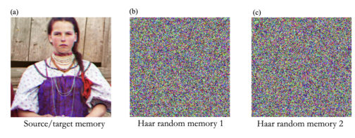
<figcaption class="paper-figure-caption"><b>Fig 1.</b> FIG. 1. Examples of memories stored for the SU(3) image- recall demonstration. (a) A fragment of a color photo (we have chosen one of the earliest known color photographs by Prokudin-Gorsky taken in 1909 using RGB filters [14]). The image is compressed into a 180 × 180 = 32400-pixel matrix which is flattened into a memory vector, ξµ=0 i , where i runs over 32400 components. Each pixel is a neuron which is en- coded as a qutrit on CP 2 through the color-to-qutrit map of Eq. (16). (b),(c) Two Haar-random qutrit memories, shown decoded back to RGB.</figcaption>
</figure>
<figure class="paper-figure-card">
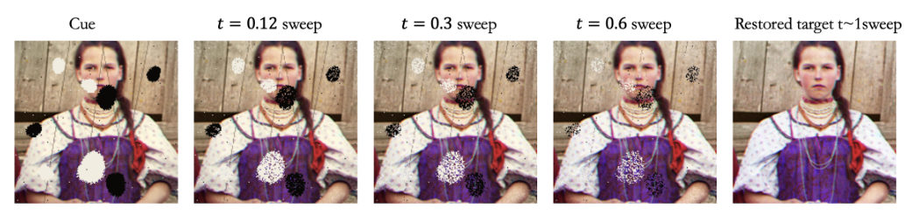
<figcaption class="paper-figure-caption"><b>Fig 2.</b> FIG. 2. Image recall from the corrupted cue using the top eigenvector update procedure for the SU(3) neural network. The progression illustrates the “restoration” of the image as a function of “time,” measured in the fraction of a single sweep (32400 individual neuron updates). For this ultra-low load of the network (100 Haar random memories and the target image) the near perfect restoration is achieved within a single sweep and then settles to a 100% match.</figcaption>
</figure>
<figure class="paper-figure-card">
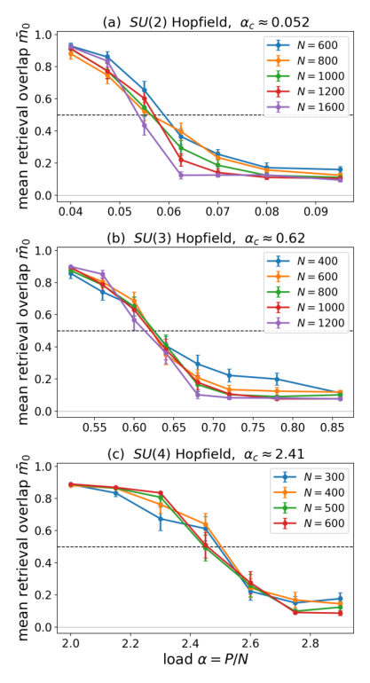
<figcaption class="paper-figure-caption"><b>Fig 3.</b> FIG. 3. Numerical simulations of the SU(d) recall for d = 2, 3, and 4 for P Haar random memories on CP d−1. Mean retrieval overlap ¯m0 = d 2(d−1) O0 with Oµ defined in Eq. (11) is plotted as a function of the network load. The dashed lines mark the threshold ¯mth = 1/2. We observe a sharp deterioration of the image recovery process and estimate the critical capacity, αc from this behavior. It shows an order of magnitude enhancement starting with d = 3.</figcaption>
</figure>
<figure class="paper-figure-card">
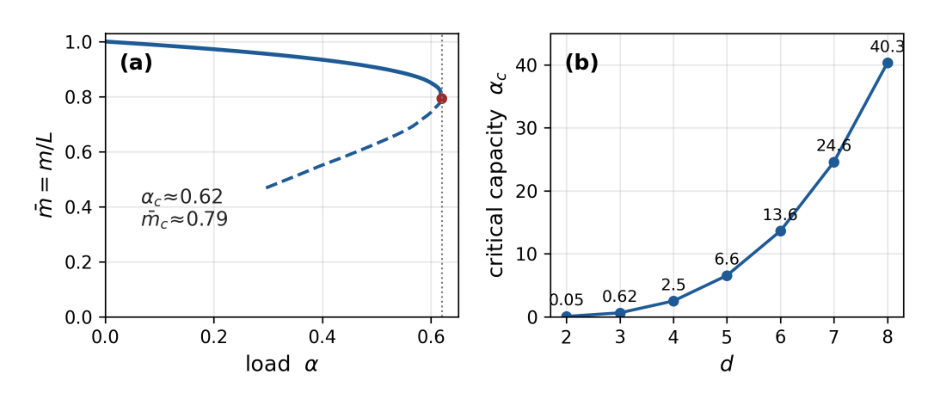
<figcaption class="paper-figure-caption"><b>Fig 4.</b> FIG. 4. (a) Replica-symmetric retrieval overlap ¯m = m/L versus load α for the d = 3 (CP 2, qutrit) network, from the T = 0 self-consistent equations (32) averaged over ∼104 samples of the matrix field ˆK. The stable (solid) and unstable (dashed) branches merge at the critical load that defines αc ≃0.62. (b) Critical capacity αc as a function of the qudit dimension d, obtained from the T = 0 replica-symmetric equations (32). The values αc ≃0.05, 0.62, 2.5, 6.6, 13.6, 24.6, 40.3 for d = 2, . . . , 8 rise steeply, exceeding unity for d ≥4 and far above the binary value 0.138.</figcaption>
</figure>
<figure class="paper-figure-card">
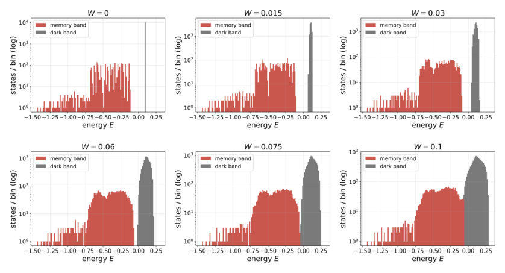
<figcaption class="paper-figure-caption"><b>Fig 5.</b> FIG. 5. Density of states of the quantum XY Hopfield model in the two-magnon sector as a function of the transverse field. The parameters are N = 160 and P = 16, corresponding to a load of 10%. The magnetic field is taken to be hi = Wui, where the random variables ui are drawn uniformly from the interval [−1, 1]. In the absence of a magnetic field, a flat (dark) band is observed, originating from the zero modes of the Hebb matrix. As the field strength increases, the dark band broadens and eventually merges with the memory band.</figcaption>
</figure>
</div>

<p><strong>Summary.</strong> This paper generalizes Hopfield networks by placing neurons on the $   ext{SU}(d)$ manifold ($ ext{CP}^{d-1}$), achieving a significant boost in memory capacity over standard models. It employs advanced techniques, including Lie algebra and replica analysis, to show that recall is governed by alignment along top eigenvectors. The results are validated using physical dynamics (LLG) and suggest connections to quantum glassy systems.</p>
<p><strong>Why it may be interesting.</strong> This work bridges concepts from quantum information (SU(d) representations, complex structures) with condensed matter physics (spin glasses, disordered systems) via neural network modeling. The connection between geometric constraints and enhanced capacity is highly relevant for understanding physical implementations of memory storage.</p>
<details>
<summary>Detailed structure</summary>
<p><strong>Main problem.</strong> To develop generalized Hopfield networks using continuous variables on Riemannian manifolds to significantly enhance memory storage capacity beyond traditional vector models.</p>
<p><strong>Main result.</strong> The use of $   ext{SU}(d)$ symmetry leads to a strong, order-of-magnitude enhancement in critical capacity ($\alpha_c$) compared to standard spherical networks. Furthermore, physical dynamics (LLG) successfully reproduce these high capacities.</p>
<p><strong>Method.</strong> The analysis combines replica techniques with Lie algebraic methods to linearize the geometric constraints of the manifold. Retrieval is analyzed using energy minimization principles derived from generalized Landau-Lifshitz-Gilbert dynamics.</p>
<p><strong>Model / system.</strong> The model is a Hopfield network where neurons and memories reside on symmetric spaces, specifically $   ext{SU}(d)$ associated with the manifold $  ext{CP}^{d-1}$. The system's energy functional governs memory storage and retrieval.</p>
<p><strong>Key observables.</strong> Critical capacity ($\alpha_c$), Memory Overlap ($O_\mu$), and the success rate of image recovery during dynamics.</p>
<p><strong>Important parameters / regimes.</strong> The dimension $d$ of the special unitary group, which dictates the manifold structure; the load parameter $\alpha$.</p>
<p><strong>Assumptions / limitations.</strong> The analysis relies on mapping the non-linear geometry onto an auxiliary Hilbert space using Lie algebra techniques. The LLG dynamics are assumed to govern physical recall.</p>
<p><strong>Figures summary.</strong> Figures illustrate image encoding/decoding protocols for SU(3) and show capacity scans demonstrating high $\alpha_c$ values, alongside visualizations of winner-takes-it-all behavior during retrieval.</p>
<p><strong>Paper structure.</strong> The paper introduces the generalized network on Riemannian manifolds, derives the energy functional using Lie algebra, analyzes the enhanced capacity via replica methods, demonstrates physical recall using LLG dynamics (including image examples), and concludes by quantizing the system to relate it to Sachdev-Ye glassy models.</p>
</details>
<details>
<summary>Abstract</summary>
<p>Generalized Hopfield networks are introduced where memories and neurons are continuous variables that lie on a Riemannian manifold. We explicitly focus on symmetric spaces associated with the special unitary groups SU(d), and use both numerical and analytical (replica) techniques to demonstrate an almost order of magnitude enhancement in critical capacity over the vector networks starting with d=3 and further rapidly growing with d. To circumvent the non-linear geometric constraints, we use a Lie algebraic method [following V. Galitski, Phys. Rev. A 84, 012118 (2011)] to exactly describe the classical neural network in terms of linear algebra in an auxiliary Hilbert space. It is shown that in contrast to the traditional Hopfield networks, memory recall in SU(d) Hopfields corresponds to neuron alignment along a top eigenvector of a spiked matrix, which is less susceptible to random matrix crosstalk than other models with continuous neuron variables. Physical platforms to realize SU(d) Hopfields are briefly discussed and physical (in addition to algorithmic) recall mechanism is demonstrated, where memory recovery occurs naturally through generalized Landau-Lifshitz-Gilbert dynamics. To illustrate SU(3) memory recall, we introduce a color (RGB) image encoding/decoding protocol and explicitly run image recovery on corrupted cues. Finally, we quantize the generalized Hopfields which are shown to reduce to Sachdev-Ye glassy type of models. Their many-body spectra generally feature two types of dark and memory bands, where the latter exhibits chaotic Wigner-Dyson level statistics that hides Hebbian data.</p>
</details>
<p><sub><a href="#top">↑ back to top</a></sub></p>

<p><a id="paper-2608.09397"></a></p>
<h3 id="ensemble-level-loopy-message-passing-with-generalized-edge-closure-for-percolation"><a href="http://arxiv.org/abs/2608.09397v1">Ensemble-level loopy message passing with generalized-edge closure for percolation</a></h3>
<p><strong>Authors:</strong> L. -H. Wang, Y. -M. Du<br>
<strong>Type:</strong> theory · <strong>Category:</strong> statistical mechanics · <strong>PDF:</strong> <a href="https://arxiv.org/pdf/2608.09397v1">https://arxiv.org/pdf/2608.09397v1</a><br>
<strong>Analysis basis:</strong> full PDF text, analyzed in chunks
<strong>Topic relevance:</strong> <code>Keldysh / 2PI / non-Gaussian methods</code> <strong>1/5</strong> · <code>analog quantum simulation</code> <strong>1/5</strong> · <code>driven-dissipative phase transition</code> <strong>1/5</strong> · <code>methods for driven-dissipative</code> <strong>1/5</strong> · <code>non-equilibrium universality</code> <strong>1/5</strong></p>
<div class="figure-strip-hint">↔ Scroll figures horizontally</div>
<div class="paper-figures-scroll">
<figure class="paper-figure-card">
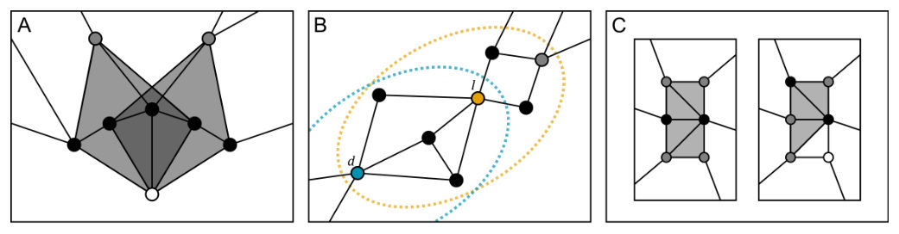
<figcaption class="paper-figure-caption"><b>Fig 1.</b> FIG. 1. Schematic illustration of second-order generalized edges, their closure property, and associated structural features. (A) Correlation structure encoded in A(2) when the number of shell-2 neighbors is two. The white node represents the focal node of degree d, black nodes represent its shell-1 neighbors in N1(d), and gray nodes represent its shell-2 neighbors in N2(d). Gray shaded regions denote generalized edges between the focal node and its shell-2 neighbors, and the darker gray region indicates the overlap between different generalized edges. (B) Structural features of a second-order generalized edge. The blue node and dashed curve indicate the node of degree d and its...</figcaption>
</figure>
<figure class="paper-figure-card">
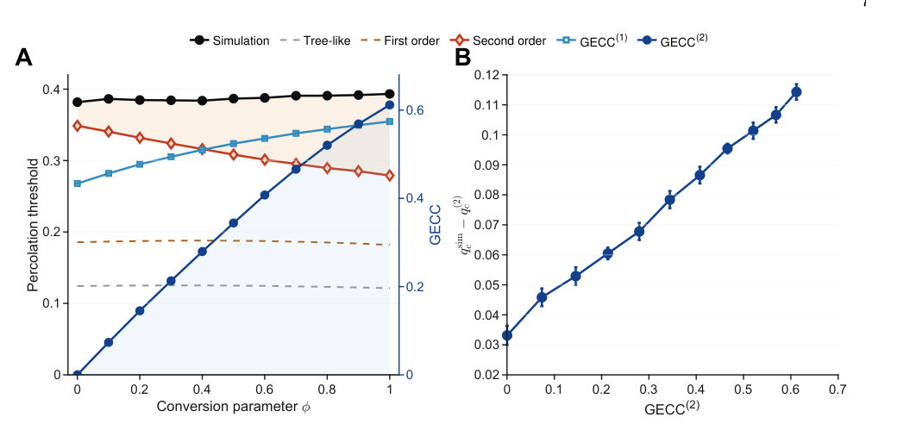
<figcaption class="paper-figure-caption"><b>Fig 2.</b> FIG. 2. Closure departure drives finite-order threshold failure in synthetic networks. (A) Simulated percolation thresholds are compared with locally tree-like, first-order, and second-order threshold predictions as the conversion parameter ϕ is varied. Threshold quantities are plotted on the left axis, and GECC(1) and GECC(2) are plotted on the right axis. Increasing ϕ drives the generalized edges from the near-closed regime (small ϕ) into the closure-departure regime (large ϕ). The orange shaded region marks the residual gap between q(2) c and qsim c . The pale-blue shading provides a visual guide for GECC(2). Error bars are included for qsim c and both GECC curves, but they are smaller...</figcaption>
</figure>
<figure class="paper-figure-card">
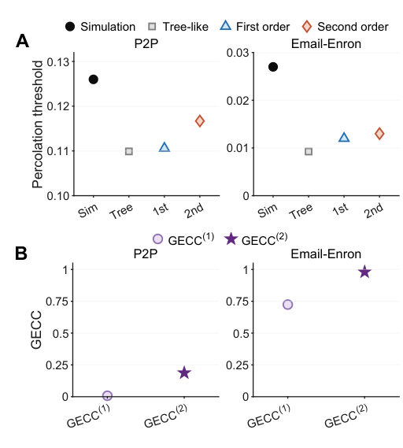
<figcaption class="paper-figure-caption"><b>Fig 3.</b> FIG. 3. GECC as an a priori diagnostic of finite- order threshold reliability in representative real net- works. (A) Simulation thresholds and theoretical predic- tions for P2P and Email-Enron. The thresholds are plotted on ordinary linear axes, allowing direct comparison between qsim c , qtree c , q(1) c , and q(2) c . (B) Corresponding generalized-edge closure coefficients GECC(1) and GECC(2) for the same two networks. Larger GECC values indicate poorer generalized- edge closure. P2P has small GECC values and a correspond- ingly small residual threshold error, whereas Email-Enron has GECC(2) close to one and a large residual error, illustrating the two structurally distinct regimes...</figcaption>
</figure>
</div>

<p><strong>Summary.</strong> This paper introduces an ensemble-level message-passing framework to accurately predict percolation thresholds in highly clustered random networks by explicitly accounting for loop correlations. The core innovation is the Generalized Edge Closure Coefficient (GECC), a local diagnostic tool that validates the reliability of these high-order approximations across synthetic and real-world complex networks.</p>
<p><strong>Why it may be interesting.</strong> While focused on classical network science, the rigorous development of higher-order correlation functions and systematic approximations for complex systems shares methodological parallels with advanced techniques used in quantum many-body physics (e.g., cluster expansions or diagrammatic methods).</p>
<details>
<summary>Detailed structure</summary>
<p><strong>Main problem.</strong> Predicting the percolation threshold of highly clustered networks from local statistics is difficult because short loops violate the independence assumption underlying tree-like message passing.</p>
<p><strong>Main result.</strong> The authors develop an ensemble-based loopy message-passing framework that accurately predicts percolation thresholds by incorporating loop correlations, validated by a diagnostic coefficient (GECC).</p>
<p><strong>Method.</strong> They derive and utilize a progressively refined, high-order message-passing recursion based on generalized-edge statistics to account for arbitrary connectivity patterns in random graph ensembles.</p>
<p><strong>Model / system.</strong> The study focuses on percolation theory applied to random clustered graph ensembles (e.g., P2P, Facebook networks). The framework models network connectivity using 'generalized edges' that characterize overlap patterns among node neighborhoods.</p>
<p><strong>Key observables.</strong> Percolation threshold ($q_c$), Generalized Edge Closure Coefficient (GECC), and the conditional finite-cluster-size distribution ($ ilde{\pi}$).</p>
<p><strong>Important parameters / regimes.</strong> The order of approximation ($n$, up to $n=2$ is detailed) and structural features like degree classes, distance, and shared neighbors.</p>
<p><strong>Assumptions / limitations.</strong> The method assumes that the complex connectivity can be systematically approximated by progressively including higher-order neighborhood statistics (generalized edges).</p>
<p><strong>Figures summary.</strong> Figures illustrate correlation structures in generalized edges ($A(2)$), structural features of second-order edges, and comparisons between simulated vs. theoretical percolation thresholds alongside their corresponding GECC values for real networks.</p>
<p><strong>Paper structure.</strong> The paper progresses from identifying the limitations of existing methods to developing an exact message-passing recursion (Eq. 4) for arbitrary order $n$. It then reduces this high-dimensional theory to a tractable, second-order approximation (Eq. 9), culminating in testing its validity using real-world networks and introducing GECC as the primary diagnostic tool.</p>
</details>
<details>
<summary>Abstract</summary>
<p>Predicting the percolation threshold of highly clustered networks from local statistics remains difficult, because short loops break the independence assumption underlying tree-like message passing. Existing remedies address loopy connectivity either through prescribed local motifs in random-graph ensembles or through a single network's realized topology, leaving an ensemble-level treatment of arbitrary connectivity patterns absent. Here, we develop a loopy message-passing framework for random clustered graph ensembles based on generalized-edge statistics, which characterize overlap patterns among the neighborhoods of different nodes. This yields a progressively refined approximation scheme based on neighborhoods of increasing size around each node. The low-order approximations recover previous equations for random network ensembles, and the new result that yields refined threshold prediction is developed by the second-order approximation. We show that the effectiveness of this framework depends not only on short-cycle density but also on the internal consistency of generalized edges. To diagnose this effectiveness, we introduce the generalized-edge closure coefficient (GECC) to quantify this consistency. Because GECC is computed entirely from local statistics and does not rely on any percolation calculation, it serves as an a priori diagnostic for the reliability of the approximation. Using synthetic and real networks, the threshold is evaluated via the second-order and lower-order approximations. Comparisons with Monte Carlo simulations show that GECC captures key structural features that strongly affect the percolation threshold. These results establish ensemble-based loopy message passing as an efficient route for predicting the percolation threshold in large clustered networks.</p>
</details>
<p><sub><a href="#top">↑ back to top</a></sub></p>

<p><a id="paper-2608.09733"></a></p>
<h3 id="aicir-a-full-stack-quantum-circuit-simulator-with-ascendnpu-support"><a href="http://arxiv.org/abs/2608.09733v1">Aicir: A Full-Stack Quantum Circuit Simulator with AscendNPU Support</a></h3>
<p><strong>Authors:</strong> Xian Lu, Xinying Li, Fei Wang, Shuai Hou, Chengkang Pan, Xin Yi, Yongmei Li<br>
<strong>Type:</strong> theory · <strong>Category:</strong> quantum information and computing · <strong>PDF:</strong> <a href="https://arxiv.org/pdf/2608.09733v1">https://arxiv.org/pdf/2608.09733v1</a><br>
<strong>Analysis basis:</strong> full PDF text, analyzed in chunks
<strong>Topic relevance:</strong> <code>analog quantum simulation</code> <strong>1/5</strong> · <code>methods for driven-dissipative</code> <strong>1/5</strong> · <code>quantum measurements</code> <strong>1/5</strong></p>
<div class="figure-strip-hint">↔ Scroll figures horizontally</div>
<div class="paper-figures-scroll">
<figure class="paper-figure-card">
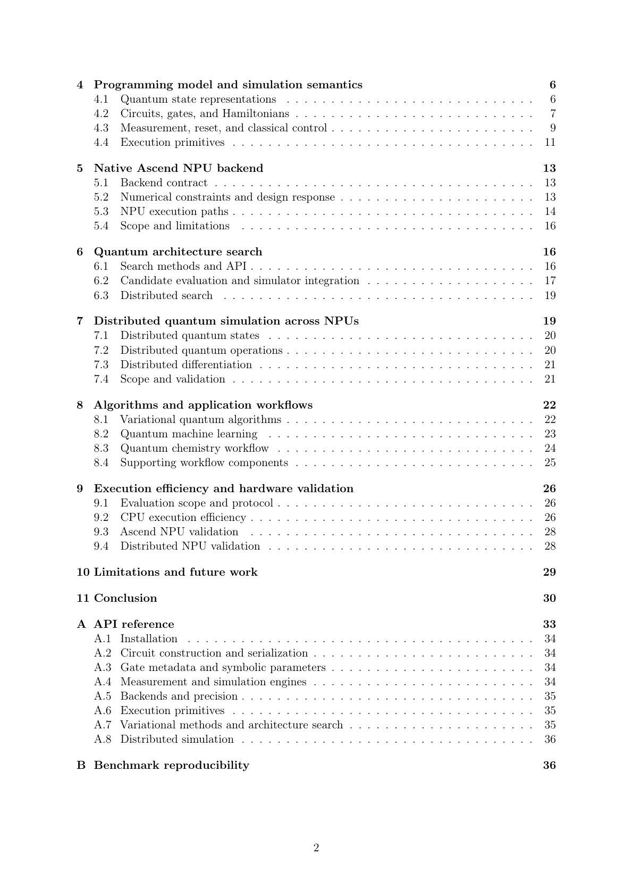
<figcaption class="paper-figure-caption"><b>Fig 1.</b> Low-resolution page preview, page 2</figcaption>
</figure>
<figure class="paper-figure-card">
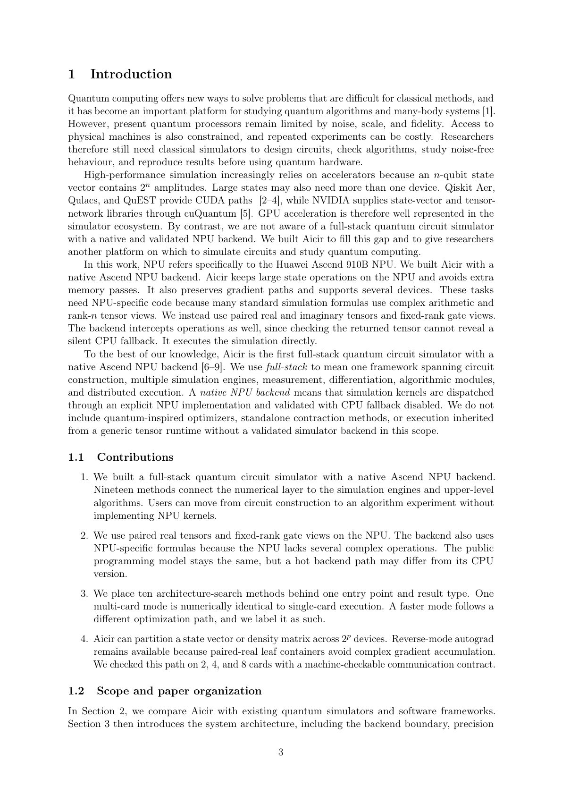
<figcaption class="paper-figure-caption"><b>Fig 2.</b> Low-resolution page preview, page 3</figcaption>
</figure>
<figure class="paper-figure-card">
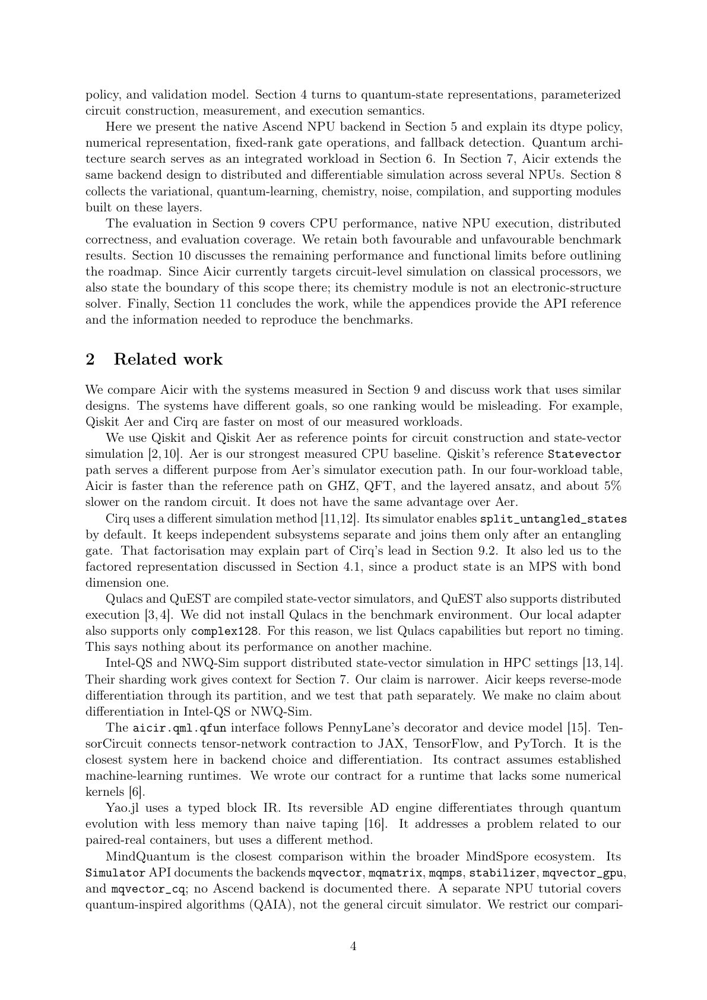
<figcaption class="paper-figure-caption"><b>Fig 3.</b> Low-resolution page preview, page 4</figcaption>
</figure>
<figure class="paper-figure-card">
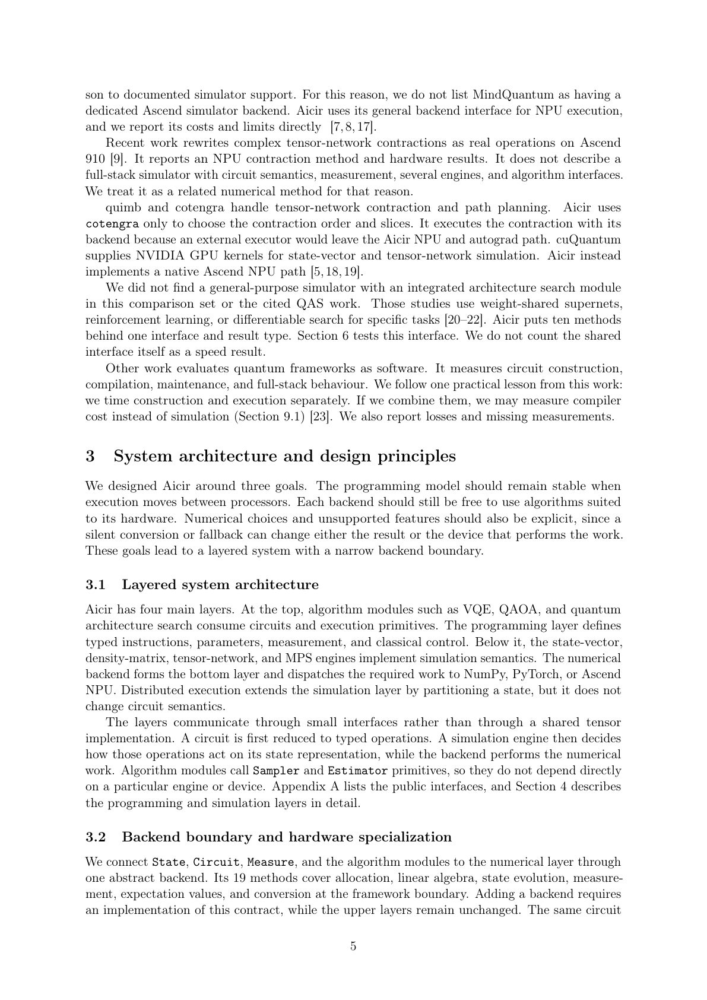
<figcaption class="paper-figure-caption"><b>Fig 4.</b> Low-resolution page preview, page 5</figcaption>
</figure>
<figure class="paper-figure-card">
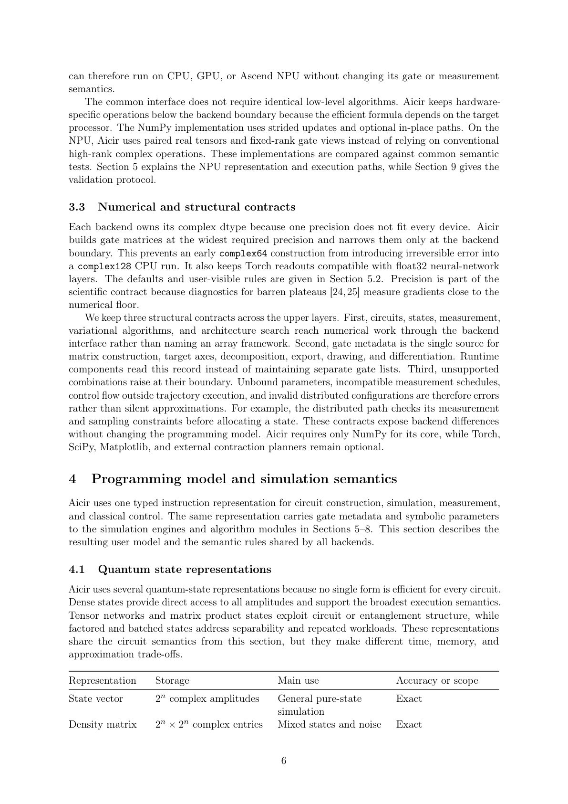
<figcaption class="paper-figure-caption"><b>Fig 5.</b> Low-resolution page preview, page 6</figcaption>
</figure>
</div>

<p><strong>Summary.</strong> This paper introduces Aicir, a comprehensive quantum circuit simulator designed to bridge the gap between theoretical algorithm design and specialized hardware. It provides full-stack support—from circuit building to variational optimization—and crucially adds native acceleration for Huawei Ascend NPUs. This makes advanced quantum simulation accessible on diverse computing platforms.</p>
<p><strong>Why it may be interesting.</strong> While focused on general quantum computing infrastructure, the development of a high-performance simulator targeting specific non-GPU hardware (NPU) is highly relevant for researchers needing to port complex quantum simulations to specialized accelerator platforms used in AMO or condensed matter research.</p>
<details>
<summary>Detailed structure</summary>
<p><strong>Main problem.</strong> Quantum circuit simulators are crucial for testing quantum algorithms due to hardware limitations, but a gap exists in high-performance tools lacking native support for NPUs.</p>
<p><strong>Main result.</strong> The authors developed Aicir, a full-stack simulator featuring native Huawei Ascend NPU support, achieving correct native execution and maintaining performance comparable to established simulators on CPU.</p>
<p><strong>Method.</strong> Aicir implements a unified programming model supporting circuit construction, state representations (state vector, tensor network, MPS), variational algorithms, and QML, with specialized backends for different hardware accelerators including the Ascend NPU.</p>
<p><strong>Model / system.</strong> The system modeled is general quantum circuits and quantum algorithms. The simulator supports various state representations like state vectors, density matrices, tensor networks, and matrix-product states (MPS).</p>
<p><strong>Key observables.</strong> Simulation performance benchmarks against Qiskit Aer and Cirq; joint-Pauli outcomes and terminal bit-string counts from measurement.</p>
<p><strong>Important parameters / regimes.</strong> Number of qubits ($n$), bond dimension ($\chi$) for MPS, number of shots for measurement, and the specific NPU architecture details (paired real tensors).</p>
<p><strong>Assumptions / limitations.</strong> The simulator's chemistry module is explicitly noted as <em>not</em> being an electronic-structure solver; performance comparisons are benchmarked against specific versions of existing frameworks.</p>
<p><strong>Figures summary.</strong> Not specified by notes, but the paper structure details API usage for circuit construction, parameter binding, and running various simulation types (statevector, tensor, MPS).</p>
<p><strong>Paper structure.</strong> The paper systematically introduces Aicir's capabilities: first addressing the need for NPU support; then detailing the full-stack features including state representations and algorithms; finally providing an API reference covering circuit construction, backend management, variational optimization, and distributed execution.</p>
</details>
<details>
<summary>Abstract</summary>
<p>Quantum computing is a promising way to study problems that are difficult for classical methods, but current quantum hardware still faces limits in scale, noise, and fidelity. Running quantum algorithms on physical machines can also be costly. Quantum circuit simulators therefore remain important because they let researchers design and test algorithms on classical computers before using quantum hardware. Most high-performance simulators provide GPU backends, while few offer native support for NPUs. This gap limits the computing platforms available for quantum-algorithm research. We developed Aicir to provide a full-stack quantum circuit simulator with a native Huawei Ascend NPU backend. Aicir connects circuit construction, several state representations, measurement, differentiation, variational algorithms, quantum machine learning, and quantum architecture search through one programming model. It also supports noise simulation, tensor-network and matrix-product-state engines, and distributed state simulation. On the NPU, paired real tensors, fixed-rank gate views, and hardware-specific formulas keep the tested simulation paths on the device. The same representation lets Aicir partition a state across $2^{p}$ NPUs while retaining reverse-mode differentiation. We validated native execution with CPU fallback disabled and checked distributed communication and gradients on 2, 4, and 8 NPUs. For the tested fused layered circuits, Aicir's CPU runtime is within $0.97$--$1.28\times$ that of Qiskit Aer and $0.76$--$1.10\times$ that of Cirq. These results place its CPU execution in the same range as established simulators for this workload, while the NPU tests establish correct native execution rather than CPU-to-NPU speedup.</p>
</details>
<p><sub><a href="#top">↑ back to top</a></sub></p>

<p><a id="paper-2608.08137"></a></p>
<h3 id="cubic-equivariant-neural-density-functional-theory-for-three-dimensional-lattice-fluids"><a href="http://arxiv.org/abs/2608.08137v1">Cubic-Equivariant Neural Density Functional Theory for Three-Dimensional Lattice Fluids</a></h3>
<p><strong>Authors:</strong> Jens Weimar, Martin Oettel, Alessandro Simon<br>
<strong>Type:</strong> theory · <strong>Category:</strong> statistical mechanics · <strong>PDF:</strong> <a href="https://arxiv.org/pdf/2608.08137v1">https://arxiv.org/pdf/2608.08137v1</a><br>
<strong>Analysis basis:</strong> full PDF text, analyzed in chunks
<strong>Topic relevance:</strong> <code>Keldysh / 2PI / non-Gaussian methods</code> <strong>1/5</strong> · <code>analog quantum simulation</code> <strong>1/5</strong> · <code>methods for driven-dissipative</code> <strong>1/5</strong></p>
<div class="figure-strip-hint">↔ Scroll figures horizontally</div>
<div class="paper-figures-scroll">
<figure class="paper-figure-card">
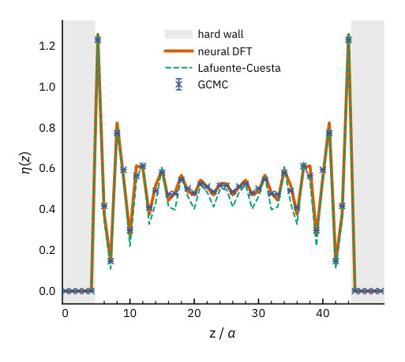
<figcaption class="paper-figure-caption"><b>Fig 1.</b> FIG. 2. Packing-fraction profile in a planar hard-wall slit at βµ = 0. The shaded regions are inaccessible to particle centers. The neural and LC profiles are converged solutions of their Euler equations; symbols show the symmetry-averaged GCMC result from 24 replicas. The GCMC uncertainty is smaller than the symbol size.</figcaption>
</figure>
<figure class="paper-figure-card">
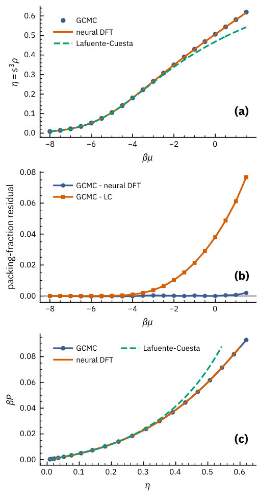
<figcaption class="paper-figure-caption"><b>Fig 2.</b> FIG. 1. Homogeneous equation of state. (a) Packing fraction η = s3ρ as a function of chemical potential. (b) GCMC-minus- model packing-fraction residuals. (c) Pressure obtained by thermodynamic integration. The standard deviation for the GCMC data is smaller than the symbol size.</figcaption>
</figure>
<figure class="paper-figure-card">

<figcaption class="paper-figure-caption"><b>Fig 3.</b> FIG. 3. Volume rendering of the neural test-particle pair distribution g(r) in the central region of the box. The dark central cube is the 5×5×5 region excluded to particle centers; the surrounding shells reveal the cubic anisotropy that is lost in a spherical average. Quantitative directional cuts are shown in Fig. 4.</figcaption>
</figure>
<figure class="paper-figure-card">
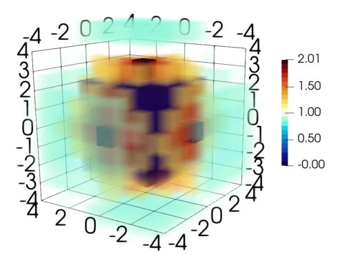
<figcaption class="paper-figure-caption"><b>Fig 4.</b> Figure 3 illustrates the resulting three-dimensional neu- ral profile, while Fig. 4 shows quantitative cuts along the three principal crystallographic families. Signed and permutation-equivalent rays are averaged for every method.</figcaption>
</figure>
<figure class="paper-figure-card">
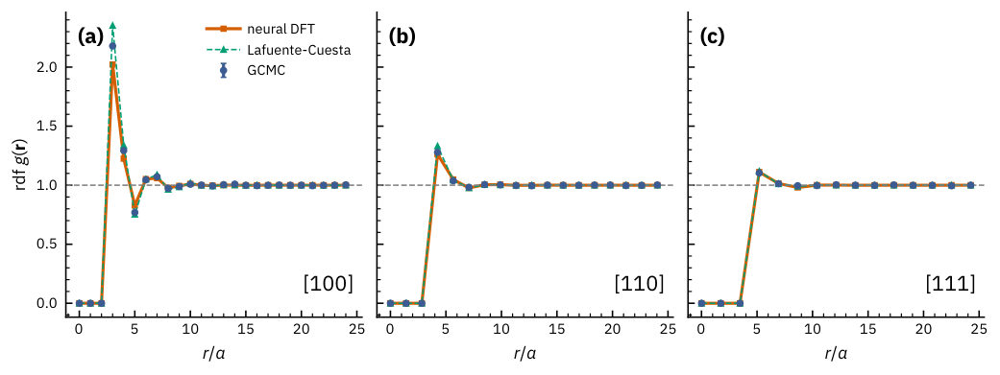
<figcaption class="paper-figure-caption"><b>Fig 5.</b> FIG. 4. Directional pair distribution at matched bulk packing fraction ηb = 0.3: (a) [100], (b) [110], and (c) [111]. GCMC symbols and standard errors are obtained from eight paired replicas after averaging all symmetry-equivalent rays. Neural and LC calculations use chemical potentials adjusted separately to reproduce the GCMC bulk density. The fixed particle excludes separations inside the central 5 × 5 × 5 cube.</figcaption>
</figure>
</div>

<p><strong>Summary.</strong> This paper introduces a novel Cubic-Equivariant Neural Density Functional Theory (DFT) designed to calculate properties of 3D lattice fluids. It trains a neural network on complete density profiles to approximate the one-body direct-correlation functional, enforcing cubic symmetry exactly. The results show that this neural approach significantly improves predictions for bulk thermodynamics and planar wall adsorption compared to existing methods.</p>
<p><strong>Why it may be interesting.</strong> While focused on classical lattice fluids, the use of equivariant neural networks to enforce fundamental symmetries in a many-body functional is highly relevant for developing machine learning potentials or force fields applicable to quantum systems where symmetry constraints are paramount.</p>
<details>
<summary>Detailed structure</summary>
<p><strong>Main problem.</strong> To develop a computationally tractable method for calculating equilibrium structure and thermodynamics by approximating the excess free-energy functional within Density Functional Theory (DFT).</p>
<p><strong>Main result.</strong> The neural functional significantly improves the accuracy for the homogeneous equation of state and the density profile at a planar hard wall compared to existing methods.</p>
<p><strong>Method.</strong> A fully convolutional neural network is trained to learn the one-body direct-correlation functional $c^{(1)}[
ho]$ directly from complete 3D density profiles, enforcing exact cubic equivariance via kernel projection.</p>
<p><strong>Model / system.</strong> The study models three-dimensional lattice fluids using parallel hard cubes on a simple cubic lattice. The framework is based on classical DFT, which approximates the many-body problem variationally.</p>
<p><strong>Key observables.</strong> Homogeneous equation of state, density profile at a planar hard wall, and anisotropic pair distribution around a fixed particle.</p>
<p><strong>Important parameters / regimes.</strong> Packing fractions ($\eta$) ranging from $\approx 0.063$ to $0.6$; the cubic point group symmetry ($G=O_h$).</p>
<p><strong>Assumptions / limitations.</strong> The method is restricted to enforcing only discrete cubic lattice symmetry, and obtaining smooth 3D histograms for reliable training targets remains a bottleneck for continuum fluids.</p>
<p><strong>Figures summary.</strong> Figures illustrate the planar hard-wall packing-fraction profile ($\eta(z)$) comparison between neural and LC functionals, and volume renderings of the test-particle pair distribution $g(\mathbf{r})$ in various crystallographic directions ([100], [110], [111]).</p>
<p><strong>Paper structure.</strong> The paper introduces the DFT framework, details the construction of the cubic-equivariant neural functional using GCMC data for training, compares its predictions (equation of state, wall profiles) against established functionals (Lafuente-Cuesta), and discusses limitations regarding continuum extension.</p>
</details>
<details>
<summary>Abstract</summary>
<p>We construct a neural classical density functional that acts directly on unrestricted three-dimensional density profiles. As a computationally tractable test bed, we consider parallel hard cubes of side length three on a simple cubic lattice. A fully convolutional network learns the one-body direct-correlation functional $c^{(1)}[ρ]$ from data obtained with grand-canonical Monte Carlo simulations in randomized external potentials. Complete profiles are used during both training and inference; a stochastic Bernoulli mask on the output sites makes full-profile training effective without explicitly extracting and storing overlapping local density windows. Averaging the first-layer kernels over all 48 rotations and reflections of the cubic point group additionally imposes exact cubic equivariance without data augmentation. We compare the learned functional with independent simulation data and with the lattice fundamental-measure functional of Lafuente and Cuesta. The neural functional markedly improves the homogeneous equation of state and the density profile at a planar hard wall. For the anisotropic pair distribution around a fixed particle, both functionals reproduce the principal packing shells, with their relative accuracy depending on crystallographic direction. These results demonstrate neural density-functional calculations on complete three-dimensional profiles while also identifying accurate full-dimensional training data, thermodynamic consistency, and structural correlations as the central challenges for extensions to continuum fluids.</p>
</details>
<p><sub><a href="#top">↑ back to top</a></sub></p>

<p><a id="paper-2608.08917"></a></p>
<h3 id="relaxation-driven-flat-bands-and-topology-in-moire-transition-metal-dichalcogenide-heterobilayers"><a href="http://arxiv.org/abs/2608.08917v1">Relaxation-driven flat bands and topology in moiré transition metal dichalcogenide heterobilayers</a></h3>
<p><strong>Authors:</strong> Mitchell Luskin, Max Geier, Liang Fu, Ziyan Zhu<br>
<strong>Type:</strong> theory · <strong>Category:</strong> strongly correlated electrons · <strong>PDF:</strong> <a href="https://arxiv.org/pdf/2608.08917v1">https://arxiv.org/pdf/2608.08917v1</a><br>
<strong>Analysis basis:</strong> full PDF text, analyzed in chunks
<strong>Topic relevance:</strong> <code>Keldysh / 2PI / non-Gaussian methods</code> <strong>1/5</strong> · <code>analog quantum simulation</code> <strong>1/5</strong> · <code>quantum measurements</code> <strong>1/5</strong></p>
<div class="figure-strip-hint">↔ Scroll figures horizontally</div>
<div class="paper-figures-scroll">
<figure class="paper-figure-card">
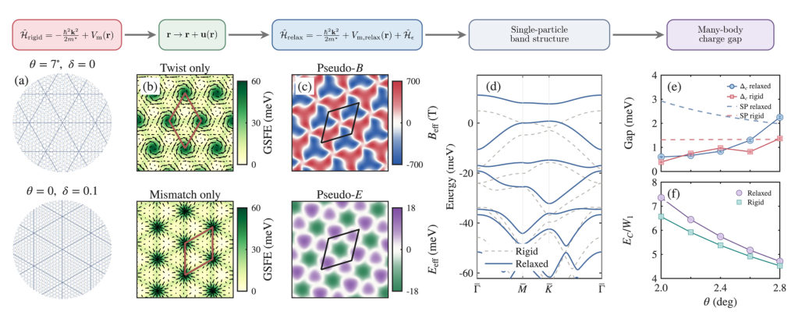
<figcaption class="paper-figure-caption"><b>Fig 1.</b> FIG. 1: Overview of the relaxed continuum model. (a) Moiré patterns formed by pure twisting (θ = 7◦, top) and by pure lattice mismatch (δ = 0.1, bottom). (b) Relaxation pattern for twist only (θ = 2◦, δ = 0, top) and for lattice mismatch only (θ = 0◦, δ = 0.02, bottom). Color indicates the generalized stacking fault energy (GSFE); arrows show the relative relaxation displacement u1 −u2; red parallelograms mark the moiré unit cell. (c) Relaxation-induced pseudomagnetic field Beff (top) and pseudoelectric field Eeff (bottom), both evaluated at θ = 1.2◦, δ = 0.02. Relaxation thereby promotes the rigid Hamiltonian ˆ Hrigid = −ℏ2k2/2m⋆+ Vm(r) to ˆ Hrelax = −ℏ2k2/2m⋆+ Vm,relax(r) + ˆ Hϵ. (d)...</figcaption>
</figure>
<figure class="paper-figure-card">
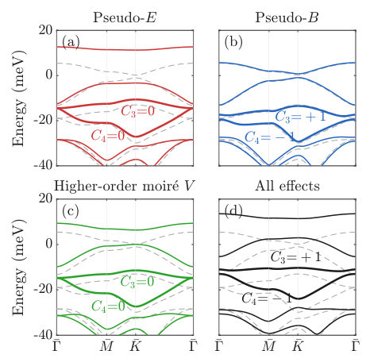
<figcaption class="paper-figure-caption"><b>Fig 2.</b> FIG. 2: Decomposition of relaxation effects on the moiré band structure of 3R-stacked WSe2/WS2 at θ = 1.0◦, δ = 0.02. Each panel shows the top valence bands (solid, colored) with the rigid band structure overlaid (gray dashed). From left to right: (a) pseudoelectric field only, Φ ∝ϵ0; (b) pseudomagnetic field only, A ∝(ϵ1, ϵ2); (c) relaxed moiré potential Vm, relax without strain; (d) all three channels combined. The third and fourth valence bands are drawn with increased linewidth, and their Chern numbers C3, C4 are labeled.</figcaption>
</figure>
<figure class="paper-figure-card">
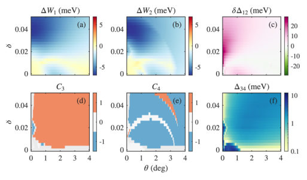
<figcaption class="paper-figure-caption"><b>Fig 3.</b> FIG. 3: Relaxation-induced band structure changes and topology across the (θ, δ) plane for 3R-stacked WSe2/WS2. Top row: changes of the electronic structures from the rigid to the relaxed model. (a) ∆W1 = W relax 1 −W rigid 1 and (b) ∆W2 show bandwidth narrowing of the top valence bands. (c) δ∆12 = ∆relax 12 −∆rigid 12 shows enhancement of the gap between the first and second valence bands. Bottom row: topology of the relaxed model. (d) Chern number C3 of the third valence band, C3 = +1 over the shaded nontrivial region. (e) Chern number C4 of the fourth valence band, predominantly C4 = −1. Gray regions: Chern number ill-defined (∆34 &lt; 0.3 meV). (f) Gap ∆34 between the third and fourth...</figcaption>
</figure>
<figure class="paper-figure-card">
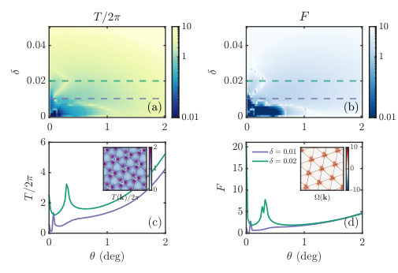
<figcaption class="paper-figure-caption"><b>Fig 4.</b> FIG. 4: Ideal band condition of the third valence band across the 3R-stacked relaxed model. (a) Integrated trace-condition violation T/2π = (2π)−1R (Tr g −|Ω|) d2q as a function of lattice constant mismatch and twist angle. (b) Berry-curvature fluctuation F = p</figcaption>
</figure>
</div>

<p><strong>Summary.</strong> The authors introduce an advanced continuum model that accounts for lattice relaxation effects in moiré TMD heterobilayers. They demonstrate that these intrinsic structural deformations are necessary to generate robust topological bands characterized by non-zero Chern numbers. This establishes a powerful new theoretical tool linking fundamental material structure to exotic quantum electronic states.</p>
<p><strong>Why it may be interesting.</strong> This work provides a rigorous theoretical framework connecting first-principles DFT calculations to measurable many-body observables like topological gaps and superfluid stiffness in moiré systems, which is highly relevant for understanding emergent quantum phases.</p>
<details>
<summary>Detailed structure</summary>
<p><strong>Main problem.</strong> To correct continuum models for moiré TMD heterobilayers by incorporating intrinsic lattice relaxation effects, which are crucial for accurately predicting their electronic topology.</p>
<p><strong>Main result.</strong> The pseudomagnetic field alone is sufficient to induce topological gaps with Chern numbers $\pm 1$, and the inclusion of full relaxation enhances these gaps while preserving the topological nature across wide parameter regimes.</p>
<p><strong>Method.</strong> Developing an extended continuum Hamiltonian that decomposes lattice relaxation into modified moiré potential, a pseudoelectric (scalar) potential, and a pseudomagnetic (vector) potential. Calculations utilize Fourier expansions and neural-network variational Monte Carlo methods.</p>
<p><strong>Model / system.</strong> The system is Moiré transition metal dichalcogenide (TMD) heterobilayers (e.g., WSe2/WS2), modeled by an effective continuum Hamiltonian incorporating strain effects ($\hat{H}_\epsilon$). The analysis compares rigid vs. relaxed electronic structures.</p>
<p><strong>Key observables.</strong> Chern numbers ($C_3, C_4$), charge gap ($\Delta_c$), superfluid stiffness ($ar{D}_s$), Berry curvature, and quantum metric.</p>
<p><strong>Important parameters / regimes.</strong> Twist angle ($  heta$) and lattice mismatch ($\delta$); the relative strength of interaction energy ($E_C$) to bandwidth ($W_1$).</p>
<p><strong>Assumptions / limitations.</strong> The continuum model framework is assumed generalizable; analysis focuses on specific stacking configurations (3R, 2H).</p>
<p><strong>Figures summary.</strong> Figures illustrate the decomposition of relaxation effects on band structure and show phase diagrams mapping topological gaps and Chern numbers across $(	heta, \delta)$ for both 3R and 2H stackings.</p>
<p><strong>Paper structure.</strong> The paper progresses by first identifying the failure of rigid models, then developing the three-channel continuum Hamiltonian, demonstrating that the pseudomagnetic field drives topology, and finally confirming these results using many-body calculations and comparing different stacking symmetries (3R vs. 2H).</p>
</details>
<details>
<summary>Abstract</summary>
<p>Moiré transition metal dichalcogenide (TMD) heterobilayers are commonly modeled by a continuum theory that yields topologically trivial bands, in contrast to their homobilayer counterparts which host topological bands and fractional Chern insulators (FCI). We show this conclusion is an artifact of neglecting the pseudomagnetic field generated by lattice relaxation, an effect intrinsic to every moiré material. We develop a continuum model that resolves relaxation into three channels: a modified moiré potential with higher Fourier harmonics, a pseudoelectric (scalar deformation) potential, and a pseudomagnetic (vector) potential. Using WSe$_2$/WS$_2$ as a prototype, we find that the pseudomagnetic field alone gaps the third and fourth valence bands with Chern numbers $\pm 1$ over a broad range of twist angle and lattice mismatch, while the moiré potential correction and pseudoelectric potential narrow the bandwidth and enhance the bandgaps, which survive many-body interactions using neural-network variational Monte Carlo calculations. Relaxation also smoothens the Berry curvature and quantum metric relative to the rigid model, moving the band closer to the ideal Chern limit, beneficial for the quantum anomalous Hall effect, FCI states, and flat-band superconductivity when filled to higher bands. Our work establishes a new framework that connects first-principles calculations, through the continuum model, to many-body observables. Using this framework, we show moiré heterobilayers as a new class of topological materials whose topology is driven entirely by intrinsic lattice relaxation.</p>
</details>
<p><sub><a href="#top">↑ back to top</a></sub></p>

<p><a id="paper-2608.07714"></a></p>
<h3 id="engineering-correlated-phases-through-manipulation-of-van-hove-singularities"><a href="http://arxiv.org/abs/2608.07714v1">Engineering correlated phases through manipulation of Van Hove singularities</a></h3>
<p><strong>Authors:</strong> Thomas P. Sheerin, Maria Ramirez, Chris A. Hooley, Luke C. Rhodes<br>
<strong>Type:</strong> theory · <strong>Category:</strong> strongly correlated electrons · <strong>PDF:</strong> <a href="https://arxiv.org/pdf/2608.07714v1">https://arxiv.org/pdf/2608.07714v1</a><br>
<strong>Analysis basis:</strong> full PDF text, analyzed in chunks
<strong>Topic relevance:</strong> <code>Keldysh / 2PI / non-Gaussian methods</code> <strong>1/5</strong> · <code>analog quantum simulation</code> <strong>1/5</strong></p>
<div class="figure-strip-hint">↔ Scroll figures horizontally</div>
<div class="paper-figures-scroll">
<figure class="paper-figure-card">
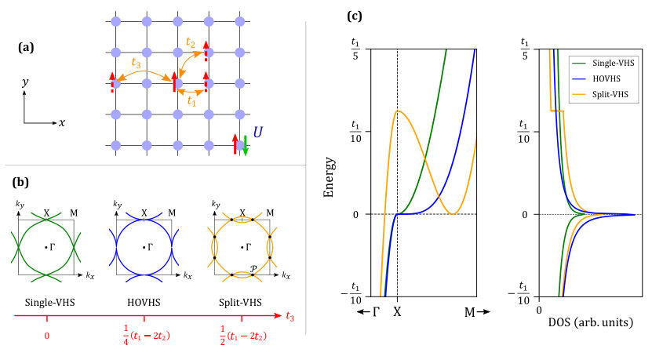
<figcaption class="paper-figure-caption"><b>Fig 1.</b> FIG. 1: (a) A real-space sketch of the square-lattice Hubbard model that we study. The model has first-, second-, and third-neighbor hopping terms with amplitudes t1, t2, and t3 respectively, as well as an on-site Coulomb repulsion term with strength U. The Hamiltonian of the model is given in (1). (b) Non-interacting Fermi surfaces of the model, with the Fermi level set to the energy of the VHSs, in three regimes: single-VHS (t3 &lt; t3c), higher-order VHS (t3 = t3c), and split-VHS (t3 &gt; t3c). Here t3c = (t1 −2t2)/4. (c) The band structure near the X point, and the density of states near the Fermi level, in the three regimes. Note the enhanced divergence in the density of states at the Fermi...</figcaption>
</figure>
<figure class="paper-figure-card">
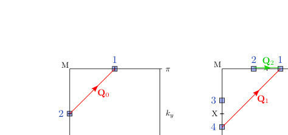
<figcaption class="paper-figure-caption"><b>Fig 2.</b> FIG. 2: The two-patch scheme used in the pRG analysis of the single-VHS and HOVHS cases (left), and the four-patch scheme used in the split-VHS case (right). Also shown are the symmetry-inequivalent inter-patch wavevectors.</figcaption>
</figure>
<figure class="paper-figure-card">
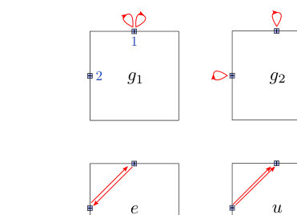
<figcaption class="paper-figure-caption"><b>Fig 3.</b> FIG. 3: The four inequivalent four-point interactions in the two-patch scenarios. The arrows indicate the initial and final momenta of the particles participating in each interaction. g1 and g2 are direct couplings, e is an exchange coupling and u is an umklapp coupling.</figcaption>
</figure>
<figure class="paper-figure-card">
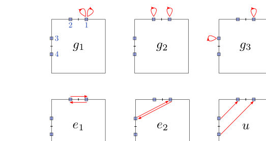
<figcaption class="paper-figure-caption"><b>Fig 4.</b> FIG. 4: The six inequivalent four-point couplings in the split-VHS case.</figcaption>
</figure>
<figure class="paper-figure-card">
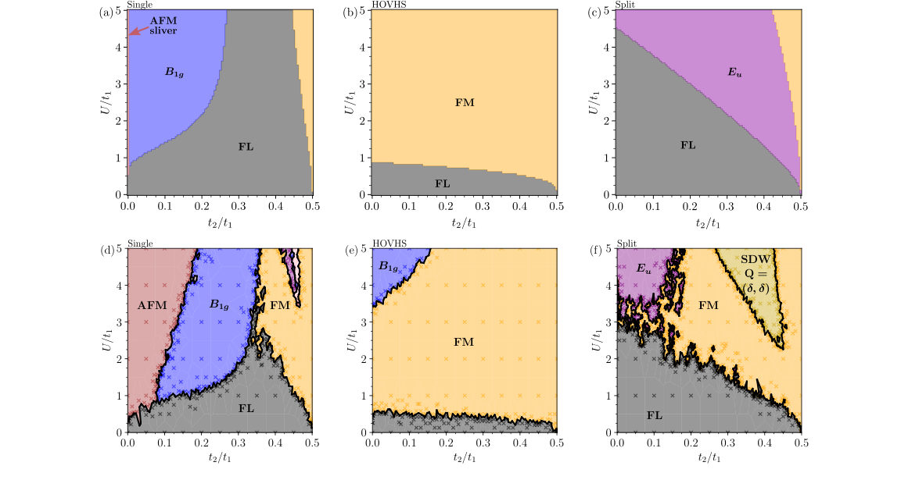
<figcaption class="paper-figure-caption"><b>Fig 5.</b> FIG. 5: Phase diagrams in the (t2/t1, U/t1) plane at Van Hove filling. Those in (a) – (c) were calculated using hot-spot pRG, for the single-VHS (t3 = 0), HOVHS (t3 = t3c) and split-VHS (t3 = 2t3c) cases, respectively. (d) – (f) show the equivalent phase diagrams calculated using TUFRG. The colors signify the phase: black is the Fermi-liquid state (FL), red is N´eel antiferromagnetism (AFM), blue is B1g (d-wave) superconductivity, orange is ferromagnetism (FM), purple is Eu (p-wave) superconductivity, and dark yellow is a spin-density wave (SDW) with a wavevector whose components vary but never exceed π/10 in magnitude (see appendix D). The thin pink region in (d), at t2/t1 ≈0.45 and U ≳4...</figcaption>
</figure>
</div>

<p><strong>Summary.</strong> This work theoretically investigates how tuning Van Hove singularities in a 2D Hubbard model controls the ordered phases of correlated electrons. By varying hopping parameters, the researchers change the nature of the electronic density of states from logarithmic to power-law divergences. The results demonstrate that these VHS properties are crucial design rules for engineering specific quantum ground states.</p>
<p><strong>Why it may be interesting.</strong> The explicit connection drawn between a tunable band structure feature (VHS divergence type) and the resulting emergent quantum ground state is highly relevant for designing novel correlated materials.</p>
<details>
<summary>Detailed structure</summary>
<p><strong>Main problem.</strong> The central challenge is controlling the ordered phases of correlated electron systems by manipulating Van Hove singularities (VHSs) in their electronic structure.</p>
<p><strong>Main result.</strong> The type and strength of VHS divergences—which can be tuned from logarithmic to power-law via hopping parameters—strongly dictate the predicted ground state, leading to distinct ordered phases depending on doping.</p>
<p><strong>Method.</strong> Theoretical analysis using advanced renormalization group techniques, specifically the hot-spot parquet (pRG) and truncated-unity functional renormalization group (TUFRG).</p>
<p><strong>Model / system.</strong> The study focuses on a two-dimensional square-lattice Hubbard model characterized by hopping parameters ($t_1, t_2, t_3$) that allow tuning the nature of VHSs at or near the Fermi level.</p>
<p><strong>Key observables.</strong> Predicted ordered states (e.g., ferromagnetic, superconducting, SDW), and the flow behavior of coupling constants derived from susceptibilities ($\Pi^q_{	ext{ph}}, \Pi^q_{	ext{pp}}$).</p>
<p><strong>Important parameters / regimes.</strong> The third-neighbor hopping parameter ($t_3$), which controls the VHS divergence type (logarithmic, power-law, or split), and doping level relative to Van Hove filling.</p>
<p><strong>Assumptions / limitations.</strong> The pRG relies on a 'hot-spot approximation,' while TUFRG is presented as a more comprehensive alternative for studying the low-energy physics near singularities.</p>
<p><strong>Figures summary.</strong> Figures illustrate the non-interacting Fermi surfaces and Density of States (DOS) across three regimes defined by $t_3$: single-VHS, HOVHS, and split-VHS. Later figures map out phase diagrams showing SDW wavevectors $(\delta, \delta)$ as a function of doping and interaction strength.</p>
<p><strong>Paper structure.</strong> The paper systematically analyzes the low-energy physics by first establishing the model and the parameter space defined by $t_3$. It then applies pRG/TUFRG to derive flow equations for coupling constants in each VHS regime, culminating in phase diagram analysis showing how doping shifts the system between different ordered states.</p>
</details>
<details>
<summary>Abstract</summary>
<p>Controlling the ordered phases of correlated electron systems remains a central challenge in quantum materials design. Divergences in the electronic density of states, known as Van Hove singularities (VHSs), are one obvious route to such control. It is clear from recent work that the exact functional form of these divergences can profoundly affect which phases are realized; a full picture, however, remains elusive. In this work, we use both the hot-spot parquet renormalization group and the truncated-unity functional renormalization group to theoretically study the emergent correlated states of a two-dimensional square-lattice Hubbard model with VHSs at or near the Fermi level. By varying a single hopping parameter, $t_3$, we are able to change the strength of the VHS divergence in the density of states from logarithmic (for $t_3 < t_{3c}$) to power-law (for $t_3 = t_{3c}$). Further increase of $t_3$ ($t_3 > t_{3c}$) causes each original Van Hove point to split into two, both of the conventional logarithmic type. We show that which of these regimes we are in strongly influences the predicted ordered states. We also study the dependence on doping, and find that the ferromagnetic state that occurs at Van Hove filling in these models is unstable to very small shifts in the Fermi level, often giving way to distinct ordered states depending on whether the model is electron- or hole-doped. These results highlight the importance of tuning VHS properties to control ordered states in correlated materials, and offer design rules to engineer these phases in novel systems.</p>
</details>
<p><sub><a href="#top">↑ back to top</a></sub></p>

<p><a id="paper-2608.09540"></a></p>
<h3 id="quantum-coordination-and-nonlocal-games-theory-and-applications"><a href="http://arxiv.org/abs/2608.09540v1">Quantum Coordination and Nonlocal Games: Theory and Applications</a></h3>
<p><strong>Authors:</strong> Husein Natur, Uzi Pereg<br>
<strong>Type:</strong> theory · <strong>Category:</strong> quantum information and computing · <strong>PDF:</strong> <a href="https://arxiv.org/pdf/2608.09540v1">https://arxiv.org/pdf/2608.09540v1</a><br>
<strong>Analysis basis:</strong> full PDF text, analyzed in chunks
<strong>Topic relevance:</strong> <code>correlated / nonlocal dissipation</code> <strong>1/5</strong> · <code>quantum measurements</code> <strong>1/5</strong></p>
<div class="figure-strip-hint">↔ Scroll figures horizontally</div>
<div class="paper-figures-scroll">
<figure class="paper-figure-card">

<figcaption class="paper-figure-caption"><b>Fig 1.</b> Fig. 1. Coordination in an autonomous network. Each autonomous vehicle and drone observes only a local part of the environment and exchanges limited information directly with neighboring agents. The communication links allow the agents to coordinate their actions without relying on a central control unit.</figcaption>
</figure>
<figure class="paper-figure-card">
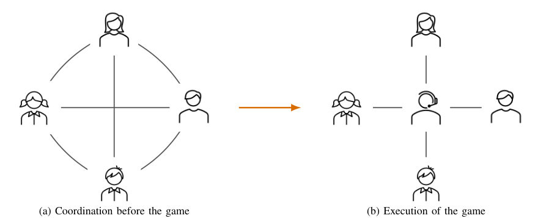
<figcaption class="paper-figure-caption"><b>Fig 2.</b> Fig. 2. Coordination as a preprocessing step in a multiplayer game. Before the game begins, the players agree on a common strategy and establish the classical or quantum correlations required to coordinate their actions. During the game, each player receives an individual query from the referee and returns a response according to the previously established strategy, without communicating with the other players.</figcaption>
</figure>
<figure class="paper-figure-card">
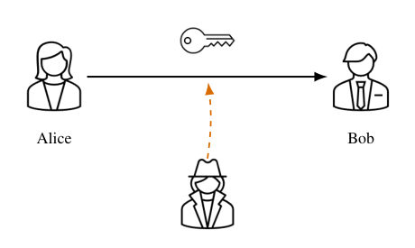
<figcaption class="paper-figure-caption"><b>Fig 3.</b> Fig. 3. Secure communication between Alice and Bob. Alice sends information to Bob using a shared cryptographic key, while Eve attempts to eavesdrop on the communication channel.</figcaption>
</figure>
<figure class="paper-figure-card">
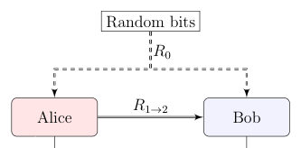
<figcaption class="paper-figure-caption"><b>Fig 4.</b> Fig. 5. A two-node classical link and pre-shared common randomness.</figcaption>
</figure>
<figure class="paper-figure-card">
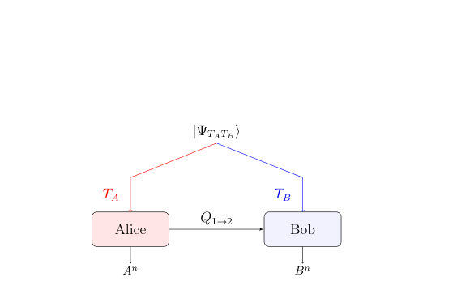
<figcaption class="paper-figure-caption"><b>Fig 5.</b> Fig. 6. A two-node quantum link pre-shared entanglement.</figcaption>
</figure>
</div>

<p><strong>Summary.</strong> This review establishes coordination as a fundamental resource in quantum networks, showing how entanglement enables correlated behaviors unattainable classically. It develops a unified framework to analyze this trade-off across different network types and highlights its critical role in advanced applications like secure key distribution and long-distance quantum communication.</p>
<p><strong>Why it may be interesting.</strong> It provides a generalized information-theoretic lens—coordination theory—to quantify the non-classical resources needed for distributed tasks, linking fundamental concepts to practical quantum networking protocols.</p>
<details>
<summary>Detailed structure</summary>
<p><strong>Main problem.</strong> The core problem is characterizing 'coordination'—the joint generation of correlated behavior among spatially separated users—in both classical and quantum communication networks.</p>
<p><strong>Main result.</strong> Quantum coordination allows for generating correlations (e.g., in nonlocal games) that are impossible to achieve classically, providing a resource advantage over purely classical means.</p>
<p><strong>Method.</strong> The authors present a unified theoretical framework comparing required resources (communication vs. correlation) across various network architectures and analyzing the operational differences between empirical and strong coordination.</p>
<p><strong>Model / system.</strong> The study models distributed systems involving multiple users, utilizing abstract communication channels (classical or quantum) supplemented by pre-shared entanglement resources.</p>
<p><strong>Key observables.</strong> Winning probability in nonlocal games (e.g., CHSH game), required communication rates, and the violation of Bell inequalities.</p>
<p><strong>Important parameters / regimes.</strong> The trade-off between communication rate ($R$), entanglement rate ($E$), and shared randomness; distinguishing between strong vs. empirical coordination requirements.</p>
<p><strong>Assumptions / limitations.</strong> The analysis assumes the ability to simulate target joint states using specified combinations of classical communication, quantum channels, and pre-shared correlations.</p>
<p><strong>Figures summary.</strong> Figures illustrate coordination in autonomous sensing networks, depict coordination as a preprocessing step in games, and show cryptographic security contexts involving eavesdropping.</p>
<p><strong>Paper structure.</strong> The paper reviews advances by first defining coordination, then applying it to nonlocal games, presenting a unified resource framework for various network topologies (two-node, cascade, etc.), and finally discussing applications like DI-QKD and quantum repeaters.</p>
</details>
<details>
<summary>Abstract</summary>
<p>Coordination is a fundamental primitive in communication and information theory, in which distributed systems must collectively generate correlated behavior rather than merely exchange messages. In quantum networks, the nature of entanglement, quantum measurements, and nonclassical correlations introduces coordination possibilities unavailable classically. This article reviews recent advances in coordination over classical and quantum communication networks, focusing on empirical and strong coordination in multi-user settings.   We consider the implications of coordination for nonlocal games, showing how it provides a natural framework for understanding the correlations that enable spatially separated players to improve their probability of winning. We present a unified framework for coordination using classical or quantum communication and pre-shared correlation resources. The review covers simulation of both entanglement and separable correlations across a variety of network architectures, including two-node, cascade, broadcast, and multiple-access networks. We study the operational differences between empirical and strong coordination, and the tradeoffs between communication and correlation resources, such as pre-shared randomness and entanglement.   Coordination plays a major role in device-independent quantum key distribution (DI-QKD) schemes, in which parties can generate a secret key even if the devices used in the process have been prepared by an adversary. Furthermore, we examine the role of coordination in quantum repeaters, where distributed entanglement serves as a resource for long-distance quantum communication. The review highlights connections between coordination theory and applications such as distributed quantum systems, quantum internet architectures, and future communication networks.</p>
</details>
<p><sub><a href="#top">↑ back to top</a></sub></p>

<p><a id="paper-2608.09689"></a></p>
<h3 id="robust-spin-pseudogap-and-spin-charge-separation-in-the-math1070math-math1071math-model"><a href="http://arxiv.org/abs/2608.09689v1">Robust spin pseudogap and spin-charge separation in the $σt$-$J$ model</a></h3>
<p><strong>Authors:</strong> Zheng-Yuan Yue, Jia-Xin Zhang, Zheng-Cheng Gu<br>
<strong>Type:</strong> theory · <strong>Category:</strong> strongly correlated electrons · <strong>PDF:</strong> <a href="https://arxiv.org/pdf/2608.09689v1">https://arxiv.org/pdf/2608.09689v1</a><br>
<strong>Analysis basis:</strong> full PDF text, analyzed in chunks
<strong>Topic relevance:</strong> <code>analog quantum simulation</code> <strong>1/5</strong> · <code>methods for driven-dissipative</code> <strong>1/5</strong></p>
<div class="figure-strip-hint">↔ Scroll figures horizontally</div>
<div class="paper-figures-scroll">
<figure class="paper-figure-card">
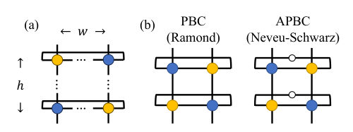
<figcaption class="paper-figure-caption"><b>Fig 1.</b> Figure 1. (a) A transfer matrix along the vertical direction consisting of w columns and h rows of tensors. (b) Fermionic 2 × 2 transfer matrices along the vertical direction with PBC (left) and APBC (right) imposed on the horizontal direction. The white circle on the trace in the APBC transfer matrix refers to the fermionic twist.</figcaption>
</figure>
<figure class="paper-figure-card">
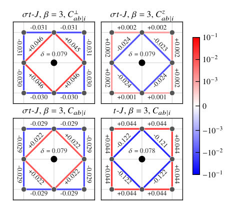
<figcaption class="paper-figure-caption"><b>Fig 2.</b> Figure 2. The 3P conditional correlators Cab|i involving NN or NNN spins at temperature β = 3 and doping δ ≈0.078 in σt-J and t-J models. i is the center site, while (a, b) is an NN or NNN bond in the 3 × 3 window not overlapping with i.</figcaption>
</figure>
<figure class="paper-figure-card">
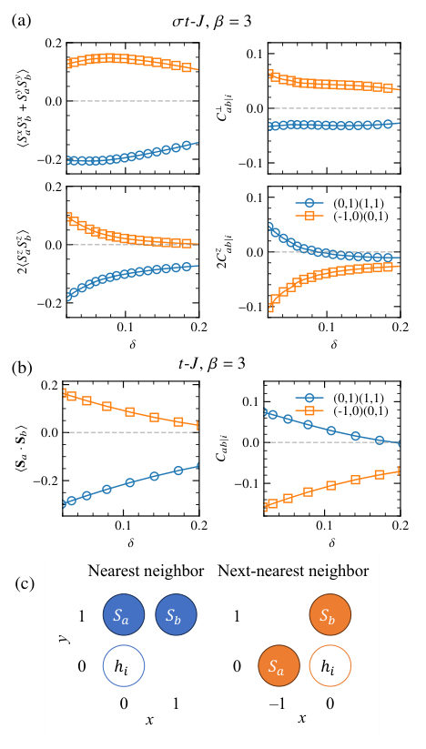
<figcaption class="paper-figure-caption"><b>Fig 3.</b> Figure 3. The spin correlation ⟨Sa · Sb⟩and the 3P correlator Cab|i as a function of doping at temperature β = 3 in (a) the σt-J model and (b) the t-J model. (c) The hole is at site i = (0, 0), and the two spins are at site a and b specified by the legend.</figcaption>
</figure>
<figure class="paper-figure-card">
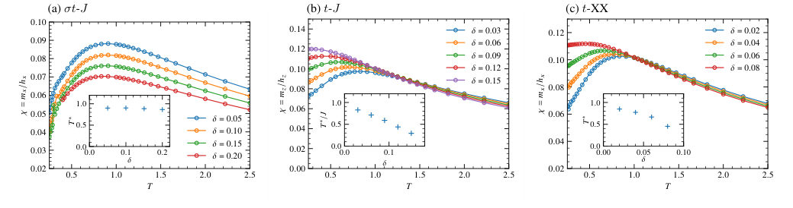
<figcaption class="paper-figure-caption"><b>Fig 4.</b> Figure 4. Spin susceptibility χ obtained with a small probe field for (a) σt-J model (D = 12), (b) t-J model (D = 18) and (c) t-XX model (D = 12), all with t = 2, J = 1. The field is applied along the x direction for (a,c) and along the z direction for (b). The inset of each panel shows the temperature T ∗at which χ reaches a maximum at a specified doping level.</figcaption>
</figure>
<figure class="paper-figure-card">
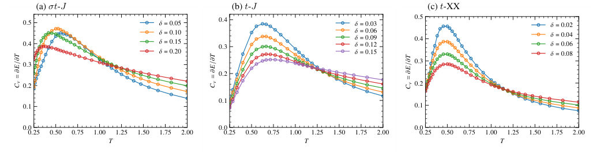
<figcaption class="paper-figure-caption"><b>Fig 5.</b> Figure 5. Specific heat Cv = ∂E/∂T for (a) σt-J model (D = 12), (b) t-J model (D = 18) and (c) t-XX model (D = 12), all with t = 2, J = 1. The energy E excludes the chemical potential terms.</figcaption>
</figure>
</div>

<p><strong>Summary.</strong> This work investigates the $\sigma t$-$J$ model to understand spin-charge dynamics in doped Mott insulators. Using advanced tensor network methods, the authors show that this modified model retains robust signatures of a spin pseudogap and BKT transition even when holes are introduced. This provides theoretical support for mechanisms preserving antiferromagnetic correlations crucial for unconventional superconductivity.</p>
<p><strong>Why it may be interesting.</strong> The use of tensor networks (iPEPS/TNR) to study strongly correlated electron models like the $t$-$J$ model is highly relevant for understanding quantum magnetism and high-$T_c$ superconductivity, bridging numerical simulation with fundamental condensed matter physics.</p>
<details>
<summary>Detailed structure</summary>
<p><strong>Main problem.</strong> The study investigates the interplay between spin and charge degrees of freedom, specifically addressing the pseudogap regime in doped Mott antiferromagnets.</p>
<p><strong>Main result.</strong> The $\sigma t$-$J$ model exhibits robust signatures of a spin pseudogap and BKT transition upon doping, suggesting that altering the hole-spin coupling preserves key magnetic correlations found in cuprates.</p>
<p><strong>Method.</strong> The research employs advanced numerical techniques like infinite projected entangled-pair state (iPEPS) algorithms and Tensor Network Renormalization (TNR), supplemented by developing a slave-fermion mean-field theory.</p>
<p><strong>Model / system.</strong> The primary system is the $\sigma t$-$J$ model, a variant of the $t$-$J$ model where the sign of the spin-down hopping term is flipped to mitigate phase string effects. This modification reduces the spin rotation symmetry from SU(2) to U(1).</p>
<p><strong>Key observables.</strong> Spin pseudogap thermodynamics (maximum in spin susceptibility at $T^* \sim J$), Berezinskii-Kosterlitz-Thouless (BKT) transition temperature ($T_{BKT}$), and doping dependence of these features.</p>
<p><strong>Important parameters / regimes.</strong> Doping ($\delta$), Temperature ($T$), Exchange coupling ($J$), Hopping parameter ($t$).</p>
<p><strong>Assumptions / limitations.</strong> The analysis relies on iPEPS/TNR methods for finite-temperature properties, and the mean-field theory constrains its Projective Symmetry Group (PSG) based on numerical results.</p>
<p><strong>Figures summary.</strong> Not specified in detail, but notes reference comparisons between $\sigma t$-$J$ and $t$-$J$ models regarding pseudogap thermodynamics and BKT transitions.</p>
<p><strong>Paper structure.</strong> The paper first introduces the $\sigma t$-$J$ model as a modification of the standard $t$-$J$ model. It then uses iPEPS/TNR to calculate finite-temperature properties, demonstrating shared thermodynamic features with the $t$-$J$ model but crucially showing robustness upon doping. Finally, it develops and validates a slave-fermion mean-field theory.</p>
</details>
<details>
<summary>Abstract</summary>
<p>The $σt$-$J$ model, obtained from the usual $t$-$J$ model by flipping the sign of the spin-down hopping term, has been proposed to eliminate the strong interference between doped holes and the spin background, known as the phase string effect. In this work, we investigate the finite-temperature properties of the $σt$-$J$ model using infinite projected entangled-pair state (iPEPS) algorithms, in comparison with the $t$-$J$ model and its easy-plane variants. We show that these models share similar spin-pseudogap thermodynamics, with a maximum in the spin susceptibility at $T^* \sim J$ and a broad specific-heat peak. Tensor network renormalization (TNR) further provides strong evidences for a Berezinskii-Kosterlitz-Thouless (BKT) transition in the spin sector of the $σt$-$J$ model at a lower temperature $T_\text{BKT} < T^*$ due to its reduced $\mathrm{U}(1)$ spin-rotation symmetry. Crucially, in contrast to the $t$-$J$ model and to its easy-plane variants that also exhibit BKT transitions, these signatures remain robust upon doping: the doped holes preserve and even enhance the antiferromagnetic correlations in the $xy$ spin plane, leading to a weak doping dependence of both $T^*$ and $T_\text{BKT}$. Finally, we develop a slave-fermion mean-field theory for the $σt$-$J$ model, whose projective symmetry group (PSG) is selected based on numerically determined hopping and pairing correlations, and show that it explains the robust spin pseudogap upon doping.</p>
</details>
<p><sub><a href="#top">↑ back to top</a></sub></p>

<p><a id="paper-2608.07677"></a></p>
<h3 id="storage-scrambling-and-loss-of-information-in-the-quantum-reservoir-computing-paradigm"><a href="http://arxiv.org/abs/2608.07677v1">Storage, Scrambling, and Loss of Information in the Quantum Reservoir Computing Paradigm</a></h3>
<p><strong>Authors:</strong> Nathan Keenan, Roberta Zambrini<br>
<strong>Type:</strong> theory · <strong>Category:</strong> quantum information and computing · <strong>PDF:</strong> <a href="https://arxiv.org/pdf/2608.07677v1">https://arxiv.org/pdf/2608.07677v1</a><br>
<strong>Analysis basis:</strong> full PDF text, analyzed in chunks
<strong>Topic relevance:</strong> <code>correlated / nonlocal dissipation</code> <strong>1/5</strong> · <code>quantum measurements</code> <strong>1/5</strong></p>
<div class="figure-strip-hint">↔ Scroll figures horizontally</div>
<div class="paper-figures-scroll">
<figure class="paper-figure-card">
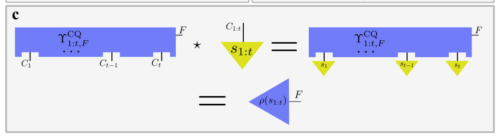
<figcaption class="paper-figure-caption"><b>Fig 1.</b> FIG. 1. a: Schematic illustrating the quantum reservoir computing procedure. (i) Information (classical or quantum) is injected into the quantum substrate. (ii) The substrate then undergoes (unitary or non-unitary) evolution. Information about previously injected inputs becomes spread across the degrees of freedom in the system, and perhaps lost to the environment. (iii) Measurements are made on the substrate in order to extract the ‘processed’ information, which is then sent to a linear readout layer (not pictured). The entire procedure is repeated for the next input. Note that this exact pattern may be altered, for example in the use of temporally multiplexed measurements. b: Process...</figcaption>
</figure>
<figure class="paper-figure-card">
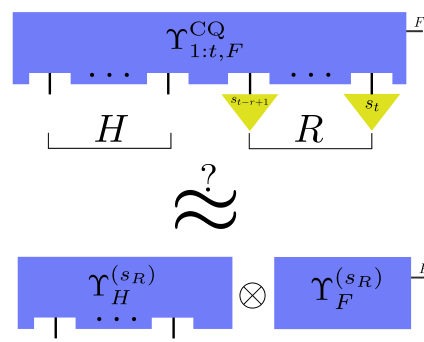
<figcaption class="paper-figure-caption"><b>Fig 2.</b> FIG. 2. The CQ state ΥCQ 1:t,F with input spaces split into ‘recent’ (R) and ‘historical’ (H). The inputs of the R window are then contracted with a choice of the classical variables, leaving only the H legs open. Lower memory in the final state of historical inputs from H will lead to better approximation of this partially-contracted CQ state by a product structure.</figcaption>
</figure>
<figure class="paper-figure-card">
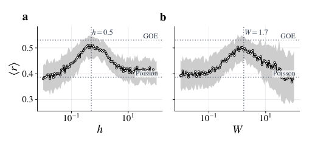
<figcaption class="paper-figure-caption"><b>Fig 3.</b> FIG. 3. Level spacing statistics for the two main parameter sweeps investigated in this section. a: The first sweep is along h values for W = 0. b: The second sweep is along W values for h = 0.03. In both cases, we indicate the values of the mean level spacing ratios from Poissonian (integrable) and GOE (chaotic) statistics, along with vertical markers to indicate the parameter values at the ‘maximally chaotic’ points in each cut. The markers indicate ensemble median across Hamilto- nian samples, with a faint window indicating the 16 −84 per- centile range of results. The full phase diagram is represented in Fig. A5 of the Appendix.</figcaption>
</figure>
<figure class="paper-figure-card">
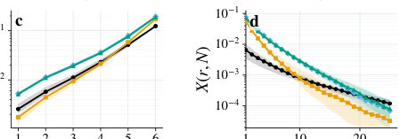
<figcaption class="paper-figure-caption"><b>Fig 4.</b> FIG. 4. a: The full Holevo value as a function of number of inputs t. b: Conditional Holevo quantities for r = 10 and f = 3 as a function of t. c: Stationary subsystem capacities Cf as a function of system size f, probed using numerics at t = 50. d: Full system conditional Holevo value X(r, N) as a function of conditioned window width r, probed using numerics at t = 50 steps of the process. All panels show results for Hamiltonians with W = 0 and a selection of different h values. The markers indicate ensemble median across Hamiltonian samples, with a faint window indicating the 16−84 percentile range of results. The results are gathered after 1000 washout steps.</figcaption>
</figure>
<figure class="paper-figure-card">
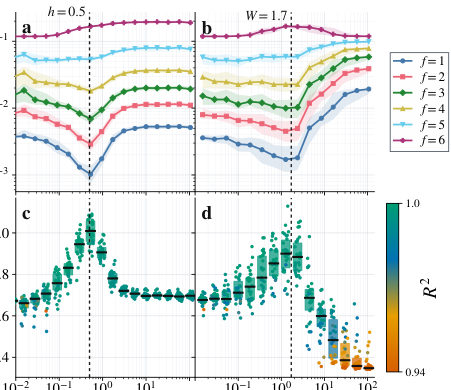
<figcaption class="paper-figure-caption"><b>Fig 5.</b> FIG. 5. a-b: The input-specific memory capacity Cf of the subsystems of size f as a function of Hamiltonian parame- ters h and W. c-d: Extracted growth rate γ of information storage across subsystem sizes f. Results across h values are along the cut W = 0, while results across W values are along the cut h = 0.03. The extracted growth rates are shown on a scatter plot across Hamiltonian samples, colour-coded by the R2 value of the fit. Horizontal black lines indicate median val- ues, while the extended rectangles display a 16-84 percentile range of results. These choices are in order to display bulk behaviour while avoiding obscuring effects of outliers.</figcaption>
</figure>
</div>

<p><strong>Summary.</strong> This paper introduces an information-theoretic framework using Holevo quantities to quantify how temporal data is stored and lost within Quantum Reservoir Computing substrates. By developing diagnostics for information scrambling and decay, the authors correlate these fundamental quantum properties with the measurable performance capacity of the QRC system across various physical regimes.</p>
<p><strong>Why it may be interesting.</strong> It provides a rigorous, quantitative framework linking fundamental quantum information concepts (scrambling, memory capacity) directly to the practical performance limits of a specific machine learning paradigm (QRC).</p>
<details>
<summary>Detailed structure</summary>
<p><strong>Main problem.</strong> The work aims to develop an information-theoretic description of how temporal information is stored, distributed, and eventually lost within the quantum substrate of a Quantum Reservoir Computing (QRC) platform.</p>
<p><strong>Main result.</strong> Two diagnostics—one for nonlocal scrambling and one for information loss—are extracted from Holevo quantities and correlated with the overall QRC performance metric (IPC).</p>
<p><strong>Method.</strong> The analysis uses the process tensor formalism to derive a classical-quantum state, allowing mutual informations between inputs and subsystems to be calculated via Holevo quantities.</p>
<p><strong>Model / system.</strong> The study focuses on Quantum Reservoir Computing (QRC) protocols, which involve an inject-evolve-measure cycle using a quantum substrate, exemplified by the disordered all-to-all transverse-field Ising model.</p>
<p><strong>Key observables.</strong> Holevo quantities ($\chi$), conditional Holevo quantities $  ext{I}(H; F|C_R)$, Information Processing Capacity (IPC), and two derived diagnostics for scrambling/loss.</p>
<p><strong>Important parameters / regimes.</strong> Hamiltonian parameters, measurement strengths, input history length ($t$), and the window width ($r$) used in memory decay analysis.</p>
<p><strong>Assumptions / limitations.</strong> The analysis is primarily restricted to single-time expectation values, neglecting full multi-time correlations for the readout layer. The Bogoliubov-Kubo-Mori (BKM) approximation is sometimes employed.</p>
<p><strong>Figures summary.</strong> Figures illustrate the QRC schematic and process tensor structure; later figures plot subsystem capacities ($C_f$) vs. size, conditional Holevo quantities vs. window width $r$, and map out a phase diagram correlating IPC performance with system parameters $(\gamma, \lambda)$.</p>
<p><strong>Paper structure.</strong> The paper builds from defining the QRC dynamics via process tensors to calculating information measures using Holevo quantities. It then develops specific diagnostics for scrambling and memory decay by analyzing conditional mutual information before finally mapping these theoretical findings onto empirical QRC performance metrics (IPC) across parameter space.</p>
</details>
<details>
<summary>Abstract</summary>
<p>The suitability of a quantum reservoir computing (QRC) platform for a given time-series processing task is closely tied to the dynamical properties of its computational substrate and design. Information is injected into, processed by, and read from this substrate, and finally passed to a linear readout layer which is trained to perform a specific task. In this work we introduce a classical-quantum state derived from the process tensor representing the dynamical part of this process for typical QRC protocols found in the literature. Using this object, mutual informations between physical subsystems and subsets of past inputs can be written as Holevo quantities, which we then use to numerically investigate information saturation in the substrate, fading memory of past inputs, and the local accessibility of injected information for a commonly used QRC platform. We then extract two diagnostics that characterise the nonlocal scrambling of information within, and loss of information from the substrate, and compare these to QRC performance across Hamiltonian parameters and measurement strengths. Finally, we comment on future directions that the framework introduced here opens up for the study and extension of the QRC program.</p>
</details>
<p><sub><a href="#top">↑ back to top</a></sub></p>

<p><a id="paper-2608.09680"></a></p>
<h3 id="uniaxial-stress-effects-on-magnetic-and-electric-properties-of-the-ground-state-in-a-centrosymmetric-magnetic-skyrmion-host-gdmath1125mathpdsimath1126math"><a href="http://arxiv.org/abs/2608.09680v1">Uniaxial stress effects on magnetic and electric properties of the ground state in a centrosymmetric magnetic skyrmion host Gd$_2$PdSi$_3$</a></h3>
<p><strong>Authors:</strong> Hiraku Saito, Naoki Kobayashi, Takuro Kawasaki, Tatsuya Nakamura, Akiko Kikkawa, Yasujiro Taguchi, Yoshinori Tokura, Taro Nakajima<br>
<strong>Type:</strong> experiment · <strong>Category:</strong> strongly correlated electrons · <strong>PDF:</strong> <a href="https://arxiv.org/pdf/2608.09680v1">https://arxiv.org/pdf/2608.09680v1</a><br>
<strong>Analysis basis:</strong> full PDF text, analyzed in chunks
<strong>Topic relevance:</strong> <code>Frenkel-Kontorova</code> <strong>1/5</strong> · <code>analog quantum simulation</code> <strong>1/5</strong></p>
<div class="figure-strip-hint">↔ Scroll figures horizontally</div>
<div class="paper-figures-scroll">
<figure class="paper-figure-card">
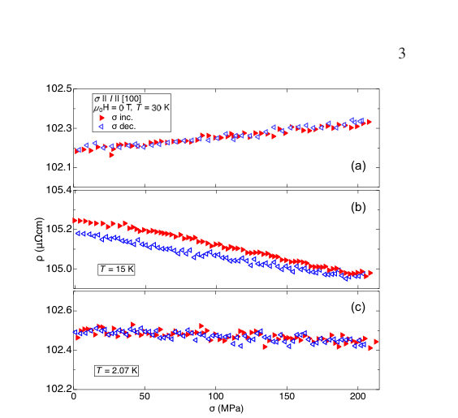
<figcaption class="paper-figure-caption"><b>Fig 1.</b> FIG. 3. Uniaxial stress dependence of ρ at µ0H = 0 T and T = (a) 30 K, (b) 15 K, and (c) 2.07 K, respectively. I ∥σ ∥[100]. The closed (open) symbol indicates the data measured under σ increase (decrease).</figcaption>
</figure>
<figure class="paper-figure-card">

<figcaption class="paper-figure-caption"><b>Fig 2.</b> FIG. 2. (a) Temperature dependence of magnetization M at µ0H = 0.01 T and σ = 0, 50, 100, 208, and 288 MPa. M ∥H ∥σ ∥[100]. (b) Temperature dependence of the difference of magnetization ∆M. (c) Temperature dependence of resistivity ρ at µ0H = 0 T and σ = 0, 50, 100, 150, and 200 MPa. Electric current I is applied along σ ∥[100]. (d) Temperature dependence of the difference of resistiv- ity ∆ρ. The measurements were performed under cooling condition. The dashed lines indicate the literature value of TN1 = 22.3 K and TN2 = 19.7 K, respectively.[14] A schematic illustration of the geometry for each measurements are shown in inset.</figcaption>
</figure>
<figure class="paper-figure-card">
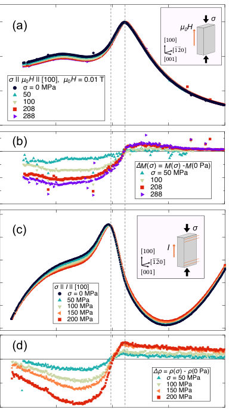
<figcaption class="paper-figure-caption"><b>Fig 3.</b> Figure 2(a) shows the temperature dependence of the mag- netization M in a magnetic field of 0.01 T applied parallel to the [100] direction. At ambient pressure, the magnetiza- tion is suppressed and start decreasing below at around 22 K, which corresponds to the phase transition from paramagnetic (PM) phase to the IC-2 phase, TN1. Gd2PdSi3 undergoes the magnetic transition to IC-1 at TN2. According to the previous studies, the phase transition at TN2 results in a local maximum in the magnetization along the c axis [3, 15], while no clear anomaly is observed in the a-axis magnetization. The present results are well consistent with the previous result.</figcaption>
</figure>
<figure class="paper-figure-card">
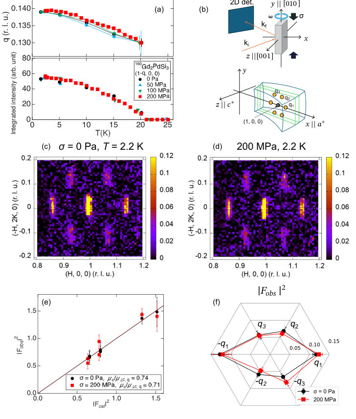
<figcaption class="paper-figure-caption"><b>Fig 4.</b> FIG. 4. (a) Temperature dependence of the magnetic propagation vector q and the integrated intensity of (1-q, 0, 0) reflection measured at σ = 0, 50, 100, and 200 MPa. (b) Schematic illustrations of the experimental geometry in (top) real and (bottom) reciprocal space. A box at the origin represents the sample. The black arrow indicates the direction of σ. The orange arrows indicate incident and scattered neutron, ki and kf . The light-blue arrow indicates an angle of sample rotation, ω. The blue square indicates 2D-PSD. The yellow (black) spheres represent magnetic (nuclear) Bragg reflections. A volume surrounded by blue solid lines is observed trajectory. A portion of volume indicated by...</figcaption>
</figure>
</div>

<p><strong>Summary.</strong> This work investigates the ground state magnetic order of $    ext{Gd}_2   ext{PdSi}_3$ by applying uniaxial stress while measuring its magnetotransport and diffraction properties. By observing that the system's response does not match predictions for a single-wavevector ($\mathbf{q}$) structure, the authors conclude that the material possesses a multi-$\mathbf{q}$ magnetic order. This provides critical insight into the complex magnetic ground states of skyrmion hosts.</p>
<p><strong>Why it may be interesting.</strong> The study uses external mechanical strain ($\sigma$) as a powerful tuning parameter to probe fundamental symmetries and magnetic ordering types (single vs. multiple wave vectors) in topological magnets, which has parallels with controlling quantum states via external fields.</p>
<details>
<summary>Detailed structure</summary>
<p><strong>Main problem.</strong> The study investigates how uniaxial stress affects the magnetic and electrical properties of the ground state in the centrosymmetric skyrmion host $  ext{Gd}_2   ext{PdSi}_3$, specifically aiming to distinguish between single-$\mathbf{q}$ and multi-$\mathbf{q}$ magnetic ordering.</p>
<p><strong>Main result.</strong> The experimental data, particularly neutron diffraction measurements under stress, strongly suggest that the ground state ($   ext{IC-1}$ phase) is a robust multi-$\mathbf{q}$ magnetic order, ruling out a single-$\mathbf{q}$ structure.</p>
<p><strong>Method.</strong> Measurements included magnetization and resistivity under applied uniaxial stress, complemented by polarized neutron diffraction to probe the magnetic structure.</p>
<p><strong>Model / system.</strong> The physical system is $    ext{Gd}_2   ext{PdSi}_3$, a hexagonal crystal with triangular layers of $   ext{Gd}^{3+}$ ions known for hosting skyrmion phases. The investigation focuses on resolving the ambiguity between single-$\mathbf{q}$ and multi-$\mathbf{q}$ magnetic ground states.</p>
<p><strong>Key observables.</strong> Magnetization ($\Delta M$), resistivity difference ($\Delta
ho$), and intensities of multiple magnetic Bragg reflections (e.g., six reflections around $(1, 0, 0)$).</p>
<p><strong>Important parameters / regimes.</strong> Uniaxial stress ($\sigma$) applied perpendicular to the $c$-axis (up to $200 	ext{ MPa}$); temperature ($T$); and magnetic field ($\mu_0	ext{H}$).</p>
<p><strong>Assumptions / limitations.</strong> The analysis assumes that anisotropic properties expected from a single-$\mathbf{q}$ order would manifest differently under stress compared to the observed results.</p>
<p><strong>Figures summary.</strong> Figures illustrate phase diagrams, temperature dependence of $\Delta M$ and $\Delta
ho$, and crucially, neutron diffraction intensity maps showing multiple magnetic reflections persisting even when uniaxial stress is applied.</p>
<p><strong>Paper structure.</strong> The paper establishes background context on skyrmion phases in $   ext{Gd}_2   ext{PdSi}_3$, details the application of uniaxial stress measurements (M, $
ho$, Neutron Diffraction), presents results showing lack of single-$\mathbf{q}$ anisotropy, and concludes that a multi-$\mathbf{q}$ order is necessary to explain the observations.</p>
</details>
<details>
<summary>Abstract</summary>
<p>We investigate effects of uniaxial stress to magnetic orders and electrical resistivity of the centrosymmetric magnetic skyrmion compound Gd$_2$PdSi$_3$, which has a hexagonal crystal structure composed of triangular lattice layers of magnetic Gd$^{3+}$ ions. This compound is known to exhibit the triple-$q$ magnetic skyrmion lattice phase with a giant topological Hall effect in the first field induced phase [T. Kurumaji $\textit{et al}$. Science $\textbf{365}$, 914-918 (2019)]. In contrast to the established picture of the field-induced phase, the ground state of this system still remains to be studied. Although previous studies reported the existence of the incommensurate magnetic modulations described by a magnetic modulation wave vector ${\bf q}=(q,0,0)$ where $q\sim 0.14$ and its equivalents, it is still unclear whether the magnetic structure is a single-$q$ structure or a multiple-$q$ structure. In the present study, we performed magnetization, resistivity and neutron diffraction measurements with a compressive uniaxial stress applied perpendicular to the $c$ axis. The observed data revealed that the system did not exhibit anisotropic magnetic and electric properties expected from a single-$q$ magnetic order, suggesting that the magnetic ground state of this system is a multi-$q$ magnetic order.</p>
</details>
<p><sub><a href="#top">↑ back to top</a></sub></p>

<p><a id="paper-2608.09659"></a></p>
<h3 id="a-domain-specific-language-for-formulating-hybrid-quantum-classical-meta-solver-strategies"><a href="http://arxiv.org/abs/2608.09659v1">A Domain-Specific Language for Formulating Hybrid Quantum-Classical Meta-Solver Strategies</a></h3>
<p><strong>Authors:</strong> Nick Poser, Domenik Eichhorn, Ina Schaefer<br>
<strong>Type:</strong> theory · <strong>Category:</strong> quantum information and computing · <strong>PDF:</strong> <a href="https://arxiv.org/pdf/2608.09659v1">https://arxiv.org/pdf/2608.09659v1</a><br>
<strong>Analysis basis:</strong> full PDF text, analyzed in chunks
<strong>Topic relevance:</strong> <code>quantum measurements</code> <strong>1/5</strong></p>
<div class="figure-strip-hint">↔ Scroll figures horizontally</div>
<div class="paper-figures-scroll">
<figure class="paper-figure-card">
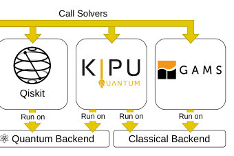
<figcaption class="paper-figure-caption"><b>Fig 1.</b> Fig. 2: The technology stack of the Meta-Solver Strategy DSL.</figcaption>
</figure>
<figure class="paper-figure-card">
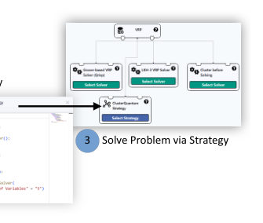
<figcaption class="paper-figure-caption"><b>Fig 2.</b> Fig. 3: Workflow in the ProvideQ Toolbox to create a strategy and to use it to solve a problem instance.</figcaption>
</figure>
<figure class="paper-figure-card">
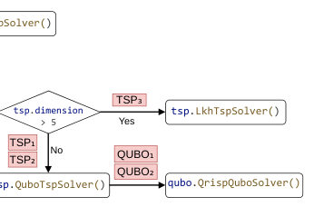
<figcaption class="paper-figure-caption"><b>Fig 3.</b> Fig. 4: Solution paths for the problem instances P-n3-k1 and P-n19-k2 in the example from Figure 1b.</figcaption>
</figure>
</div>

<p><strong>Summary.</strong> This paper addresses the difficulty of designing hybrid quantum-classical workflows by proposing a Domain-Specific Language (DSL). This DSL allows users to formally encode 'meta-solver strategies,' which automatically decide whether to use classical or quantum methods based on problem characteristics. The framework enables the execution of these complex, expert-defined solution paths using an orchestration layer like ProvideQ.</p>
<p><strong>Why it may be interesting.</strong> While not focused on physical quantum systems, the work is highly relevant as it provides the necessary high-level software tooling (the DSL) to <em>apply</em> advanced quantum algorithms (like QAOA or Grover's) to complex computational problems in a structured and reproducible manner.</p>
<details>
<summary>Detailed structure</summary>
<p><strong>Main problem.</strong> The primary challenge is designing efficient hybrid quantum-classical workflows by determining which parts of a complex problem are suitable for potential quantum advantage.</p>
<p><strong>Main result.</strong> The authors propose a Domain-Specific Language (DSL) and an associated framework that allows users to formally express, automate, and execute best-practice meta-solver strategies across diverse problems.</p>
<p><strong>Method.</strong> They introduce a DSL built around a type/instance model to define problem types, instances, and decision logic. This DSL enables the composition of solvers—both classical and quantum—into hierarchical 'Meta-Solver Strategies'.</p>
<p><strong>Model / system.</strong> The system is a multi-layered software architecture: an Editor $\rightarrow$ DSL Execution Framework $\rightarrow$ ProvideQ Toolbox $\rightarrow$ Backend Services (e.g., Qiskit). The core model involves defining problem types and instances to guide the decision logic.</p>
<p><strong>Key observables.</strong> The execution path taken by the Meta-Solver Strategy for different input problem sizes, demonstrating successful switching between quantum and classical solvers based on problem characteristics.</p>
<p><strong>Important parameters / regimes.</strong> Problem characteristics (e.g., VRP dimension size) that trigger specific branches in the decision logic (e.g., if dimension &lt; 4 use Qrisp).</p>
<p><strong>Assumptions / limitations.</strong> The DSL structure mandates that an 'else' branch must always be present in decisions, as a solution must always be received.</p>
<p><strong>Figures summary.</strong> Figures illustrate the five-layer technology stack for execution and provide concrete examples showing how complex problems like VRP are decomposed into subproblems (like TSPs) solved via mixed classical/quantum paths based on input parameters.</p>
<p><strong>Paper structure.</strong> The paper introduces the need for specialized expertise in hybrid workflows, proposes the DSL to capture best practices universally, details the type/instance model and syntax, presents a multi-layered execution framework using ProvideQ, and validates it with case studies like VRP decomposition.</p>
</details>
<details>
<summary>Abstract</summary>
<p>A key challenge when designing hybrid quantum-classical workflows is the identification of quantum candidates, that is, determining for which specific problems quantum advantages could potentially be achieved. When choosing between several candidates, it is crucial to consider the characteristics specific to the problem, as these can fundamentally determine how successful quantum or classical approaches will be. This implies that specialized expertise is needed to use hybrid quantum-classical workflows successfully. To address this challenge, we propose a domain-specific language (DSL) to express best-practices in solution strategies using a universal representation that is easy to use and share. This DSL provides a flexible approach to design hybrid quantum-classical workflows and to automate decisions for a wide range of problems, supporting decisions down to problem-specific details while remaining technically independent. Furthermore, we propose a framework that is built around our DSL that enables the execution of defined workflows using the ProvideQ toolbox as an orchestration layer. All contributions from this publication are open source.</p>
</details>
<p><sub><a href="#top">↑ back to top</a></sub></p>

<p><a id="paper-2608.09583"></a></p>
<h3 id="a-highly-accurate-fast-decoding-framework-for-qldpc-codes-accelerated-by-noise-perturbation-and-ensemble-decoding"><a href="http://arxiv.org/abs/2608.09583v1">A Highly Accurate Fast Decoding Framework for QLDPC codes Accelerated by Noise Perturbation and Ensemble Decoding</a></h3>
<p><strong>Authors:</strong> Mainak Bhattacharyya, Ankur Raina<br>
<strong>Type:</strong> theory · <strong>Category:</strong> quantum information and computing · <strong>PDF:</strong> <a href="https://arxiv.org/pdf/2608.09583v1">https://arxiv.org/pdf/2608.09583v1</a><br>
<strong>Analysis basis:</strong> full PDF text, analyzed in chunks
<strong>Topic relevance:</strong> <code>quantum measurements</code> <strong>1/5</strong></p>
<div class="figure-strip-hint">↔ Scroll figures horizontally</div>
<div class="paper-figures-scroll">
<figure class="paper-figure-card">
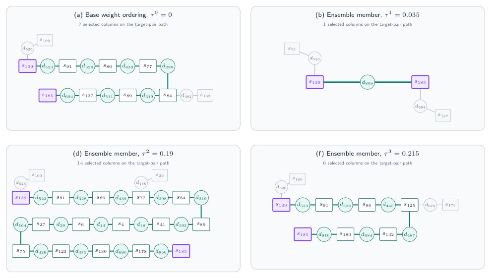
<figcaption class="paper-figure-caption"><b>Fig 1.</b> FIG. 1. We show how different scaling factors for the applied noise can help an ensemble explore different Tanner paths connecting a given pair of violated detector (stabilizer check) nodes. We use a sparse detector error model (DEM) matrix of the distance 7 rotated planar surface code and sample a syndrome at a fixed circuit error rate p = 0.003. An ensemble of Tanner forests having different noise scaling parameters is generated using Eq. (10). In this figure, we only show the path connecting a target detector node pair {s139, s185} from the Tanner forests of some ensemble member instances. We can see that varying the noise scaling parameter τ b across different ensemble instances b...</figcaption>
</figure>
<figure class="paper-figure-card">
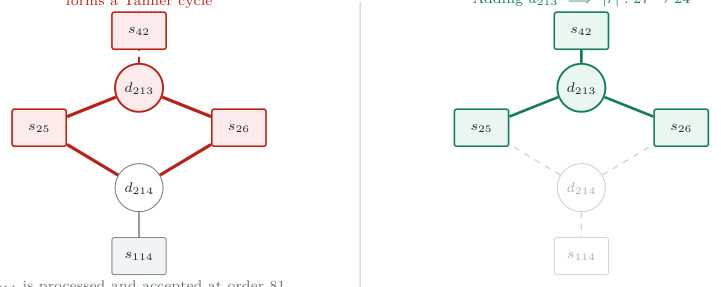
<figcaption class="paper-figure-caption"><b>Fig 2.</b> FIG. 2. In this figure, we show how the dynamic gain term in Eq. (12) helps select good columns of a decoding matrix for general purpose QLDPC codes, where the column weights of the decoding matrix exceeds 2. We sample a syndrome from the circuit level noise over the BB code [[144, 12, 12]] at a fixed circuit noise rate p = 0.003 and the decoding happens over the sparse detector error model (DEM) of the BB code. Under the static case, i.e. β = 0, the orders of the sorted columns are fixed for the forest construction of each ensemble instance. In (a) we show the sorted column order of one such instance labeled as ‘static’. However, under the dynamic forest construction, we set β = 2 and the...</figcaption>
</figure>
<figure class="paper-figure-card">

<figcaption class="paper-figure-caption"><b>Fig 3.</b> FIG. 3. We show the circuit-level logical error rates of the rotated planar surface codes obtained under both the NAED and BP+OSD0 decoder. The NAED contains an ensemble of 11 decoding instances with the noise scaling factor uniformly distributed across the 11 forest constructions in the range {0, 0.5}. Also, the synthetic soft information used for the Tanner forest constructions is used as in Eq. (10). The BP iterations are capped at a maximum of 1000 for the BP+OSD0 decoder. The circuit-level noise model assumed for the simulations are described in the Appendix C. A logical error occurs if the decoder- predicted logical observable does not match the logical of the prepared state. The LERs...</figcaption>
</figure>
<figure class="paper-figure-card">

<figcaption class="paper-figure-caption"><b>Fig 4.</b> FIG. 4. We compare the mean per error correction round de- coding time of the NAED and BP+OSD0 for various distance surface codes. The NAED decoder follows Algorithm 3. The NAED ensemble contains 10 decoding instances working in parallel on an M4 MacBook chip. We report the NAED de- coding time from the initialization to the time of the first ob- tained syndrome valid solution from any of the parallel work- ers. We sample 1000 syndromes at a fixed circuit noise rate p = 0.002 and obtain the mean decoding times per error cor- rection round.</figcaption>
</figure>
<figure class="paper-figure-card">

<figcaption class="paper-figure-caption"><b>Fig 5.</b> FIG. 5. We show the circuit-level LERs of BB codes obtained under various decoding methods. We compare the standard min-sum BP variant and BP+OSD0 with the NAED variants proposed for general-purpose QLDPC codes. The ‘two-stage NAED’ first tries to solve the syndrome using Algorithm 3 with the full DEM as input. If the syndrome is not resolved using the full DEM, Algorithm 3 is executed on the sparse BB DEM. The ‘Two-stage NAED + post BP’ is motivated by the findings from Table V. This NAED variant invokes a low-cost post-min-sum BP algorithm over the full and sparse DEMs if the two NAED stages cannot resolve the input syndrome. The ensemble size of the NAED is B = 100. The synthetic soft...</figcaption>
</figure>
</div>

<p><strong>Summary.</strong> This paper introduces Noise Assisted Ensemble Decoding (NAED), a novel framework designed to decode Quantum Low-Density Parity Check (QLDPC) codes efficiently. NAED constructs an ensemble of Tanner forests using synthetic soft information derived from noise measurements. It demonstrates that this method achieves state-of-the-art accuracy while providing massive speedups, crucial for practical quantum error correction.</p>
<p><strong>Why it may be interesting.</strong> The focus on decoding algorithms for QLDPC codes is central to realizing fault-tolerant quantum computation, which is a major goal in theoretical physics and quantum information science.</p>
<details>
<summary>Detailed structure</summary>
<p><strong>Main problem.</strong> The core problem is developing a decoding framework for Quantum Low-Density Parity Check (QLDPC) codes that is both highly accurate and significantly faster than existing state-of-the-art methods.</p>
<p><strong>Main result.</strong> The proposed Noise Assisted Ensemble Decoding (NAED) achieves performance comparable to the best decoders while offering orders-of-magnitude improvements in per-round decoding speed, making it suitable for real-time quantum computation.</p>
<p><strong>Method.</strong> NAED constructs an ensemble of Tanner forests by guiding their construction with synthetic soft information derived from syndrome measurements and channel statistics, followed by exact inference via dynamic programming on each forest.</p>
<p><strong>Model / system.</strong> The work focuses on fault-tolerant quantum computing using QLDPC codes. The analysis involves simulating decoding performance under circuit-level Pauli noise models applied to the code structure defined by sparse Deterministic Encoding Matrices (DEMs).</p>
<p><strong>Key observables.</strong> Decoding performance (Logical Error Rate, $p_L$) and per-round decoding speed.</p>
<p><strong>Important parameters / regimes.</strong> Circuit noise rate ($p$), noise scaling parameter ($   au$), and the weight of columns in the DEM matrix ($  ext{wt}(D:q)$).</p>
<p><strong>Assumptions / limitations.</strong> The framework addresses the Degenerate Quantum Maximum Likelihood Decoding (DQMLD) problem, which existing classical decoders fail to solve due to code degeneracies.</p>
<p><strong>Figures summary.</strong> Figures compare Logical Error Rates for Surface Codes and BB codes using various decoder strategies (BP+OTF vs NAED) across varying circuit noise rates, demonstrating NAED's superior performance.</p>
<p><strong>Paper structure.</strong> The paper introduces the limitations of current decoders regarding QLDPC degeneracies. It then details the NAED framework, which uses synthetic soft information and ensemble construction on Tanner forests for exact inference. Finally, it validates this approach through circuit-level simulations comparing its performance against established methods like BP+OTF.</p>
</details>
<details>
<summary>Abstract</summary>
<p>A well-balanced decoder has been central to the development of modern fault-tolerant quantum computing. However, the inherent topologies of quantum error correcting codes can limit the performance of many well-studied decoding algorithms. In this work, we introduce Noise Assisted Ensemble Decoding (NAED), a highly accurate decoding framework with a significant advantage in real-time speed. NAED constructs an ensemble of Tanner forests, obtained as acyclic subgraphs of the original Tanner graph, and performs exact inference on each Tanner forest using a lightweight dynamic programming algorithm. The forest construction is guided by synthetic soft information derived jointly from the measured syndrome and channel statistics, with controlled noise perturbations generating diverse yet informative decoding matrix column orderings for the Tanner forest construction across the ensemble. Our benchmark results show that the proposed synthetic soft information-driven construction and inference on the Tanner forests can achieve improved or comparable decoding performances to the state-of-the-art decoding solutions, such as BP+OSD$0$, while also providing orders-of-magnitude improvements in per-round decoding speed under circuit-level noise.</p>
</details>
<p><sub><a href="#top">↑ back to top</a></sub></p>

<p><a id="paper-2608.09675"></a></p>
<h3 id="an-efficient-explicit-implementation-of-a-quantum-algorithm-with-quantum-advantage-for-nonlinear-scalar-conservation-laws"><a href="http://arxiv.org/abs/2608.09675v1">An Efficient Explicit Implementation of a Quantum Algorithm with Quantum Advantage for Nonlinear Scalar Conservation Laws</a></h3>
<p><strong>Authors:</strong> Kezhen Wang, Junpeng Hu, Lei Zhang<br>
<strong>Type:</strong> theory · <strong>Category:</strong> quantum information and computing · <strong>PDF:</strong> <a href="https://arxiv.org/pdf/2608.09675v1">https://arxiv.org/pdf/2608.09675v1</a><br>
<strong>Analysis basis:</strong> full PDF text, analyzed in chunks
<strong>Topic relevance:</strong> <code>quantum measurements</code> <strong>1/5</strong></p>
<div class="figure-strip-hint">↔ Scroll figures horizontally</div>
<div class="paper-figures-scroll">
<figure class="paper-figure-card">

<figcaption class="paper-figure-caption"><b>Fig 1.</b> Figure 1: One-dimensional traffic-flow-type equation with f(u) = u(1 −u). The figure compares the matrix- operator reference, the classical Schr¨odingerisation solution, and the Trotter–Schr¨odingerisation solution for different auxiliary resolutions nw.</figcaption>
</figure>
<figure class="paper-figure-card">

<figcaption class="paper-figure-caption"><b>Fig 2.</b> Figure 2: Two-dimensional Burgers equation with Gaussian initial data. The upper row shows the Trotter– Schr¨odingerisation solution for different values of nw. The lower row shows the absolute error with respect to the matrix-operator reference solution.</figcaption>
</figure>
<figure class="paper-figure-card">

<figcaption class="paper-figure-caption"><b>Fig 3.</b> Figure 3: Total gate count of the time-evolution circuit as a function of the auxiliary Fourier grid size Nw, for several spatial resolutions Nx.</figcaption>
</figure>
<figure class="paper-figure-card">

<figcaption class="paper-figure-caption"><b>Fig 4.</b> Figure 3 provides a numerical verification of the gate-complexity estimate in Lemma 4 using the one- dimensional Burgers equation as a representative example. For fixed spatial resolution Nx, increasing the aux- iliary Fourier resolution Nw increases the number of controlled powers associated with the Schr¨odingerisation register. Figure 4 shows the L2 error as a function of nw. The error is computed against the matrix-operator reference solution. This experiment isolates the effect of the auxiliary-variable discretization and recovery. The natural function g(w) = e−|w|</figcaption>
</figure>
<figure class="paper-figure-card">

<figcaption class="paper-figure-caption"><b>Fig 5.</b> Figure 4: L2 error as a function of nw for different choices of the auxiliary profile g(w). Smoother profiles improve the convergence rate in the auxiliary variable.</figcaption>
</figure>
</div>

<p><strong>Summary.</strong> This paper presents an end-to-end quantum algorithm to simulate nonlinear scalar conservation laws, transforming the challenging non-unitary PDE into a unitary evolution problem using Schrödingerisation. By providing explicit circuit constructions and rigorous complexity analysis, the authors claim a demonstrable quantum advantage for estimating physical observables in high dimensions.</p>
<p><strong>Why it may be interesting.</strong> This work provides a concrete blueprint for applying quantum computation to complex non-equilibrium dynamics (like shock waves), which is a major frontier in simulating physical systems beyond simple Hamiltonians. The explicit gate-level construction makes the theoretical claims highly actionable.</p>
<details>
<summary>Detailed structure</summary>
<p><strong>Main problem.</strong> Developing an efficient, explicit quantum algorithm capable of simulating nonlinear scalar conservation laws.</p>
<p><strong>Main result.</strong> The authors demonstrate a quantum advantage for observable estimation in high spatial dimensions by transforming the non-unitary dynamics into a unitary evolution via Schrödingerisation and constructing explicit gate-level circuits.</p>
<p><strong>Method.</strong> The core method involves lifting the nonlinear PDE to a linear Liouville equation, discretizing it using finite differences, embedding this into a unitary Hamiltonian via Schrödingerisation, and implementing time evolution using Trotterization on quantum circuits.</p>
<p><strong>Model / system.</strong> The system is governed by scalar conservation laws ($\partial u / \partial t + 
abla \cdot F(u) = 0$). The simulation proceeds by mapping the dynamics to a linear Liouville equation solved via an upwind finite difference scheme, which is then unitarized.</p>
<p><strong>Key observables.</strong> The primary observable is the expectation value $\langle G 
angle$, representing relevant physical quantities derived from the evolved state $|\Psi(t)
angle$.</p>
<p><strong>Important parameters / regimes.</strong> Key parameters include spatial grid sizes ($N_x$), momentum grid sizes ($N_p$), and error tolerances ($\epsilon$). The complexity scales depend on these discretization choices.</p>
<p><strong>Assumptions / limitations.</strong> The method assumes standard conditions for state preparation, oracle access, and relies on approximating the Dirac delta function with smooth mollifiers ($\delta_\omega$) to achieve numerical tractability.</p>
<p><strong>Paper structure.</strong> The paper follows a logical progression: first, formulating the problem by linearizing the PDE via the level-set method; second, discretizing this linear system and constructing the effective unitary Hamiltonian through Schrödingerisation; third, deriving explicit gate-level circuits for time evolution using Trotter formulas; and finally, performing detailed error analysis to establish complexity bounds demonstrating quantum advantage.</p>
</details>
<details>
<summary>Abstract</summary>
<p>Quantum algorithms for nonlinear partial differential equations remain challenging because nonlinear dynamics are not directly amenable to unitary quantum simulation. Building on the level-set formulation, we construct a quantum algorithm and provide an explicit gate-level implementation for solving scalar conservation laws. The nonlinear equation is first lifted to a linear Liouville equation, discretized by finite differences, and then embedded into a unitary evolution through Schrödingerisation. We further develop quantum procedures for estimating relevant observables from the evolved state. Error bounds and gate-complexity estimates are established for the complete algorithm. The resulting complexity comparison demonstrates a quantum advantage for observable estimation in sufficiently high spatial dimensions, under standard assumptions on state preparation and oracle access. Finally, numerical experiments validate the accuracy, multidimensional applicability, and predicted scaling of the proposed method.</p>
</details>
<p><sub><a href="#top">↑ back to top</a></sub></p>

<p><a id="paper-2608.08758"></a></p>
<h3 id="analytical-nuclear-gradients-and-hessians-on-quantum-hardware-via-orbital-optimized-vqe-with-error-mitigation"><a href="http://arxiv.org/abs/2608.08758v1">Analytical Nuclear Gradients and Hessians on Quantum Hardware via Orbital-Optimized VQE with Error Mitigation</a></h3>
<p><strong>Authors:</strong> Renato Olarte Hernandez, Karl Michael Ziems, Erik Kjellgren, Jacob Kongsted, Sonia Coriani, Stephan P. A. Sauer<br>
<strong>Type:</strong> theory · <strong>Category:</strong> other · <strong>PDF:</strong> <a href="https://arxiv.org/pdf/2608.08758v1">https://arxiv.org/pdf/2608.08758v1</a><br>
<strong>Analysis basis:</strong> full PDF text, analyzed in chunks
<strong>Topic relevance:</strong> <code>quantum measurements</code> <strong>1/5</strong></p>
<div class="figure-strip-hint">↔ Scroll figures horizontally</div>
<div class="paper-figures-scroll">
<figure class="paper-figure-card">

<figcaption class="paper-figure-caption"><b>Fig 1.</b> Figure 1. The tiled-UPS ansatz with the perfect pairing ordering as proposed by Burton [96]. The first two operator columns correspond to the first layer (blue), and the combination of the first and second columns (blue and green) corresponds to a two-layer ansatz, and so on.</figcaption>
</figure>
<figure class="paper-figure-card">

<figcaption class="paper-figure-caption"><b>Fig 2.</b> Figure 2. H2 classical FCI and ideal one-layer tUPS energies and gradients. (Bottom) Hydrogen’s stretching PES and its associated gradient modulus. (Top) The energy and gradient errors with respect to the classical FCI reference.</figcaption>
</figure>
<figure class="paper-figure-card">

<figcaption class="paper-figure-caption"><b>Fig 3.</b> Figure 3. H2/AS(2,2)/STO-3G ground state shot noise simulation. The average and standard deviation of 100 simulations of the electronic energy are shown versus the number of shots. The ’Inf’ label stands for an infinite limit of shots.</figcaption>
</figure>
<figure class="paper-figure-card">

<figcaption class="paper-figure-caption"><b>Fig 4.</b> Figure 4. H2O/AS(4,4)/STO-3G classical CASSCF and ideal a) one-layer and b) two-layer tUPS energies and gradients. (Bottom) Water stretching PESs and their associated gradient modulus. (Top) The energy and gradient errors with respect to the classical CASSCF reference.</figcaption>
</figure>
<figure class="paper-figure-card">

<figcaption class="paper-figure-caption"><b>Fig 5.</b> Figure 5. H2O/AS(4,4)/STO-3G ground state shot noise simulation. The average and standard deviation of 100 simulations of the electronic energy are shown versus the number of shots. The ’Inf’ label stands for an infinite limit of shots.</figcaption>
</figure>
</div>

<p><strong>Summary.</strong> This paper presents a method to calculate fundamental chemical properties—nuclear gradients and Hessians—on quantum computers using an orbital-optimized VQE approach. By combining linear response theory with error mitigation techniques, the authors test their workflow on $  ext{H}_2$ and $ ext{H}_2    ext{O}$. The results validate the technique for small molecules while clearly mapping out current hardware limitations.</p>
<p><strong>Why it may be interesting.</strong> This work bridges advanced quantum chemistry (calculating derivatives for spectroscopy/optimization) with near-term quantum hardware limitations, providing a crucial benchmark for quantum simulation algorithms in molecular physics.</p>
<details>
<summary>Detailed structure</summary>
<p><strong>Main problem.</strong> The core problem is implementing the analytical calculation of nuclear gradients (first derivatives) and Hessians (second derivatives) for molecular energy with respect to nuclear coordinates directly on quantum hardware.</p>
<p><strong>Main result.</strong> The methodology demonstrates good performance when tested on the hydrogen molecule ($  ext{H}_2$), although the water molecule ($    ext{H}_2    ext{O}$) reveals significant trade-offs related to current error mitigation strategies.</p>
<p><strong>Method.</strong> It combines an active-space framework with orbital optimization (oo-VQE) and utilizes a tiled unitary product state (tUPS) ansatz. Error mitigation is achieved using an adapted confusion-matrix scheme.</p>
<p><strong>Model / system.</strong> The calculations are performed for molecular systems, specifically testing on $ ext{H}_2$ and $ ext{H}_2    ext{O}$. The underlying theory uses the electronic Hamiltonian in second quantization within a linear-response framework.</p>
<p><strong>Key observables.</strong> Potential energy surfaces, nuclear gradients ($\mathbf{E}^{(1)}$), Hessians ($\mathbf{E}^{(2)}$), and vibrational frequencies.</p>
<p><strong>Important parameters / regimes.</strong> The complexity scales with the size of the molecule (e.g., $    ext{H}_2    ext{O}$ is more demanding than $    ext{H}_2$).</p>
<p><strong>Assumptions / limitations.</strong> The approach operates in a Noisy Intermediate-Scale Quantum (NISQ) context, necessitating quantum error mitigation techniques rather than full error correction.</p>
<p><strong>Figures summary.</strong> Figure 1 illustrates the structure of the tiled-UPS ansatz used for the calculation.</p>
<p><strong>Paper structure.</strong> The paper follows a standard scientific structure: Theory development $
ightarrow$ Computational Methods detailing the oo-VQE and linear response implementation $
ightarrow$ Results assessing performance on $   ext{H}_2$ and $ ext{H}_2    ext{O}$ $
ightarrow$ Conclusion outlining error sources and future directions.</p>
</details>
<details>
<summary>Abstract</summary>
<p>Nuclear gradients and Hessians are fundamental quantities in computational chemistry, essential for a wide range of applications including geometry optimization, vibrational spectroscopy, and molecular property calculations. In this work, we present their analytical implementation on quantum hardware. The methodology is formulated within an active-space framework combining orbital optimization and linear-response theory.   On the quantum-computing side, the approach employs the tiled unitary product state (tUPS) ansatz to directly evaluate the tensor elements required for solving the response equations. Moreover, the expectation values are corrected using an adapted confusion-matrix error-mitigation scheme in combination with post-selection criteria. The resulting workflow is assessed on molecular hydrogen and on water through the calculation of potential energy surfaces, nuclear gradients, Hessians, and vibrational frequencies, enabling the evaluation of both its capabilities and current limitations.   The results demonstrate good performance for the hydrogen molecule, whereas the water molecule provides a more demanding test of quantum-hardware resources and highlights the trade-offs associated with error-mitigation strategies. The quantified analysis of the results identify the main sources of errors, suggesting improvement directions for more accurate quantum computer applications.</p>
</details>
<p><sub><a href="#top">↑ back to top</a></sub></p>

<p><a id="paper-2608.09347"></a></p>
<h3 id="binary-code-rate-bounds-via-classical-quantum-channels"><a href="http://arxiv.org/abs/2608.09347v1">Binary code rate bounds via classical--quantum channels</a></h3>
<p><strong>Authors:</strong> Omar Alrabiah, Venkatesan Guruswami<br>
<strong>Type:</strong> theory · <strong>Category:</strong> quantum information and computing · <strong>PDF:</strong> <a href="https://arxiv.org/pdf/2608.09347v1">https://arxiv.org/pdf/2608.09347v1</a><br>
<strong>Analysis basis:</strong> full PDF text, analyzed in chunks
<strong>Topic relevance:</strong> <code>quantum measurements</code> <strong>1/5</strong></p>
<div class="figure-strip-hint">↔ Scroll figures horizontally</div>
<div class="paper-figures-scroll">
<figure class="paper-figure-card">

<figcaption class="paper-figure-caption"><b>Fig 1.</b> Figure 1: Five benchmark rate curves, shown for 0 ⩽𝛿⩽ 1 2. The Plotkin [Plo60], Elias– Bassalygo [Eli55, Bas65], and first MRRW [MRRW77] curves are closed form, while the second MRRW [MRRW77] and MQC curves are sampled one-dimensional minima. The two-variable 2MQC infimum from (46) is not plotted; analytically, it lies strictly below the second MRRW throughout 0 &lt; 𝛿&lt; 1</figcaption>
</figure>
<figure class="paper-figure-card">

<figcaption class="paper-figure-caption"><b>Fig 2.</b> Figure 2: A plot of the MQC Holevo information function 𝐹1/4(𝑢) = 𝑠(𝑢2) −𝑠(𝑢(𝑢−1</figcaption>
</figure>
<figure class="paper-figure-card">

<figcaption class="paper-figure-caption"><b>Fig 3.</b> Figure 3: Numerically minimized values of Δ(𝛿) = 𝑅MRRW(𝛿) −𝑅MQC(𝛿) for 0.2 ⩽𝛿⩽0.499, shown on a logarithmic vertical scale. The strict-improvement proposition (Proposition 25) proves Δ(𝛿) &gt; 0 for every 𝛿∈(0, 1</figcaption>
</figure>
<figure class="paper-figure-card">

<figcaption class="paper-figure-caption"><b>Fig 4.</b> Figure 4: Rate upper bounds for binary linear codes whose duals are generated by checks of weight at most 3. The first MRRW curve [MRRW77] applies to every binary code, whereas 𝐵SY 3 and 𝑈PSC 3 apply to this sparse-check class. By Theorem 4 and Lemma 30, 𝑈PSC 3 lies strictly below the first MRRW bound for 0 &lt; 𝛿&lt; 1</figcaption>
</figure>
</div>

<p><strong>Summary.</strong> This paper develops a unifying framework that connects the rate-distance tradeoffs of binary codes to the capacity of classical--quantum channels using a 'pretty good criterion.' By analyzing the posterior bit error rate under quantum measurements, the authors derive bounds that reproduce established results and introduce new mixed-qubit channels (MQC) to strictly improve these theoretical limits.</p>
<p><strong>Why it may be interesting.</strong> This work provides a powerful, unified theoretical tool—the pretty good criterion—to analyze fundamental limits in quantum coding theory by mapping them onto channel capacity problems, which is central to quantum information science.</p>
<details>
<summary>Detailed structure</summary>
<p><strong>Main problem.</strong> The paper derives asymptotic rate-distance tradeoffs for binary error-correcting codes by establishing a connection between these bounds and the capacity of classical--quantum (cq) channels.</p>
<p><strong>Main result.</strong> A 'pretty good criterion' unifies known code bounds (Plotkin, Elias–Bassalygo, MRRW) and introduces new quantum channels (MQC, 2MQC) that strictly improve existing rate limits for given error constraints.</p>
<p><strong>Method.</strong> The core method involves analyzing the posterior bit error rate under a 'pretty good measurement' (PGM) applied to cq channels, relating this constraint to minimizing channel capacity.</p>
<p><strong>Model / system.</strong> The analysis uses binary-input output-symmetric classical--quantum (cq) channels, characterized by output density matrices $\sigma_0$ and $\sigma_1$. The framework progresses from general channels to specific models like the Pure-State Channel (PSC) and Mixed-Qubit Channels (MQC).</p>
<p><strong>Key observables.</strong> Posterior bit error rate ($p_e$), channel capacity ($\chi$), code rate ($R(\mathcal{C})$), and Holevo information.</p>
<p><strong>Important parameters / regimes.</strong> Relative distance $\delta$ of the code, which dictates the required performance level for the quantum measurement.</p>
<p><strong>Assumptions / limitations.</strong> The primary assumption is that the cq channel is output-symmetric, allowing the use of uniform-prior Holevo information as the capacity measure. The derivation heavily relies on the properties and linearity of PGMs.</p>
<p><strong>Paper structure.</strong> The paper establishes a general criterion (Theorem 1) linking rate bounds to channel capacity via PGM error rates, then applies this framework to reproduce classical/quantum bounds for specific channels. Finally, it introduces MQC and 2MQC to provide explicit improvements over the standard MRRW bounds.</p>
</details>
<details>
<summary>Abstract</summary>
<p>We derive the four principal asymptotic rate-distance tradeoffs for binary codes---Plotkin, Elias--Bassalygo, and the two McEliece--Rodemich--Rumsey--Welch (MRRW) bounds---from one theorem, the ``pretty good criterion.'' If the bit error rate under the pretty good measurement (PGM)---the quantum analog of posterior sampling---of a binary-input output-symmetric classical--quantum (cq) channel lies below $δ$, then every length-$n$ binary code, linear or nonlinear, of relative distance $δ$ has rate at most the channel's capacity, up to an $O(n^{-1/2})$ correction. Rate--distance bounds thereby reduce to a channel design problem, wherein the task is to minimize channel capacity subject to the posterior bit error rate constraint. Via the pretty good criterion, the binary erasure channel (BEC) yields Plotkin, the binary symmetric channel (BSC) yields Elias--Bassalygo, the pure-state channel (PSC) yields the first MRRW bound, and a masked PSC yields the second MRRW bound exactly.   This framework is then instantiated with new channels to improve upon the MRRW bounds. Specifically, the mixed-qubit channel (MQC), a mixed-state version of PSC, strictly improves the first MRRW bound at every $0 < δ< \frac{1}{2}$, while the masked mixed-qubit channel (2MQC) strictly improves the second MRRW bound throughout the same interval.</p>
</details>
<p><sub><a href="#top">↑ back to top</a></sub></p>

<p><a id="paper-2608.08765"></a></p>
<h3 id="bona-automatic-management-of-dirty-ancilla-borrowing-in-quantum-circuits"><a href="http://arxiv.org/abs/2608.08765v1">Bona: Automatic Management of Dirty Ancilla Borrowing in Quantum Circuits</a></h3>
<p><strong>Authors:</strong> Xiaoquan Xu, Chenke Liu, Boning Meng, Zihao Shen, Li Zhou<br>
<strong>Type:</strong> theory · <strong>Category:</strong> quantum information and computing · <strong>PDF:</strong> <a href="https://arxiv.org/pdf/2608.08765v1">https://arxiv.org/pdf/2608.08765v1</a><br>
<strong>Analysis basis:</strong> full PDF text, analyzed in chunks
<strong>Topic relevance:</strong> <code>quantum measurements</code> <strong>1/5</strong></p>
<div class="figure-strip-hint">↔ Scroll figures horizontally</div>
<div class="paper-figures-scroll">
<figure class="paper-figure-card">

<figcaption class="paper-figure-caption"><b>Fig 1.</b> Fig. 1. The transformation from left to right illustrates how an idle middle interval of the top wire can be borrowed to serve as a dirty ancilla (the wire marked with ◀and ▶).</figcaption>
</figure>
<figure class="paper-figure-card">

<figcaption class="paper-figure-caption"><b>Fig 2.</b> Fig. 2. A quantum circuit (left) with input qubits 𝑞1 and 𝑞2 and three quantum gates, and its corresponding DAG representation (right).</figcaption>
</figure>
<figure class="paper-figure-card">

<figcaption class="paper-figure-caption"><b>Fig 3.</b> Fig. 3. Left: Implementations of C3NOT using C2NOT gates and one ancilla. The red dirty-ancilla circuit is fully semantically equivalent to the black target circuit, whereas the blue clean-ancilla circuit is equivalent only when the ancilla is initialized to |0⟩. Right: Implementation of two parallel C3NOT with recycling, with the clean ancilla marked by an orange line.</figcaption>
</figure>
<figure class="paper-figure-card">

<figcaption class="paper-figure-caption"><b>Fig 4.</b> Fig. 4. A circuit-level illustration of the transition sequence from left to right. Each labeled box represents a subcircuit. Boxes with the same label connected by a vertical line together denote a single subcircuit, indicating the quantum variables on which it acts. A dashed box denotes the subcircuit produced by the preceding transition.</figcaption>
</figure>
<figure class="paper-figure-card">

<figcaption class="paper-figure-caption"><b>Fig 5.</b> Fig. 5. Interleaving topology and borrowing. Borrowing 𝑞for 𝑑2 first yields width 3 in (b); a topological transition then exposes 𝑑3 in (c), enabling another borrowing to reach width 2 in (d).</figcaption>
</figure>
</div>

<p><strong>Summary.</strong> This paper introduces Bona, a novel compiler scheduler designed to automatically manage 'dirty ancilla borrowing' in quantum circuits. By formalizing this resource management technique and proving its computational limits, the authors show that dirty ancillas allow for massive reductions in circuit width with minimal depth overhead. This is vital for scaling quantum algorithms on near-term hardware.</p>
<p><strong>Why it may be interesting.</strong> For theorists working on quantum simulation or algorithm design, this work provides concrete tools to optimize the physical implementation of algorithms (like Hamiltonian simulation) by exploiting hardware/circuit topology in ways previously considered manual or intractable.</p>
<details>
<summary>Detailed structure</summary>
<p><strong>Main problem.</strong> The core problem is developing an automatic method for managing 'dirty ancilla borrowing' within quantum circuits to significantly reduce the required circuit width.</p>
<p><strong>Main result.</strong> The proposed scheduler, Bona, achieves near-optimal width reduction (up to 99%) on benchmarks like Parallel Quantum Walk, while crucially maintaining or improving the circuit depth compared to clean-ancilla schemes.</p>
<p><strong>Method.</strong> The authors formalize dirty-qubit borrowing as a graph edge-splicing problem and develop Bona, a novel depth-aware heuristic scheduler that systematically manages resource allocation using an OpGrid data structure.</p>
<p><strong>Model / system.</strong> The system is modeled by quantum circuits represented as Directed Acyclic Graphs (DAGs) operating on qubits. Dirty ancillas are auxiliary qubits whose initial states are unknown but can be temporarily borrowed from idle qubits, offering flexibility beyond standard clean-ancilla initialization.</p>
<p><strong>Key observables.</strong> Circuit width (primary optimization goal), circuit depth (secondary consideration), and the count of dirty ancillas used.</p>
<p><strong>Important parameters / regimes.</strong> The efficiency gain is measured by comparing the resulting width/depth against established clean-qubit recycling schemes, particularly for highly parallel circuits like PQW.</p>
<p><strong>Assumptions / limitations.</strong> The theoretical framework relies on proving an isomorphism between graph edge-splicing and circuit borrowing transitions. Practically, it assumes that postponing Dirty-Dirty recycling until necessary is optimal.</p>
<p><strong>Figures summary.</strong> Figures illustrate the transformation of quantum circuits into DAGs, showing how idle intervals can be borrowed as dirty ancillas (Figure 1), and detailing the safe use of dirty vs. clean ancillas in specific gate implementations like C3NOT (Figure 3).</p>
<p><strong>Paper structure.</strong> The paper first formalizes the problem by proving its NP-hardness via reduction from DAG-in-UDG, establishing theoretical limits. It then introduces Bona, a scheduler built on an OpGrid data structure, which implements a two-phase resource management strategy: soft reuse followed by hard borrowing.</p>
</details>
<details>
<summary>Abstract</summary>
<p>The management of ancilla qubits has become a critical technique for reducing quantum circuit width. Dirty ancillas, which may be borrowed from any temporarily idle qubit regardless of their initial states, offer substantial flexibility for width optimization, but their use has so far required manual and error-prone handling. We formalize the dirty-qubit borrowing problem and establish a fundamental computational limit by proving its NP-hardness. To support practical optimization, we present \bona, the first scheduler for dirty-qubit borrowing, built on a novel depth-aware heuristic algorithm. We evaluate \bona~ across a variety of benchmarks, including practical quantum circuits and randomly arranged compositions of real circuit modules, and find that it reduces nearly 99\% of dirty ancillas on average with controlled depth overhead. In particular, for parallel quantum walk---an essential component of parallel Hamiltonian simulation---\bona~ matches the circuit width achieved by the clean-qubit schemes of \citeauthor{jiang2024recycling}~(\citeyear{jiang2024recycling}) and \citeauthor{quantinuum}~(\citeyear{quantinuum}), but attains significantly smaller circuit depth, providing concrete evidence that dirty ancillas offer unique optimization advantages in circuits with certain parallelism.</p>
</details>
<p><sub><a href="#top">↑ back to top</a></sub></p>

<p><a id="paper-2608.08668"></a></p>
<h3 id="born-oppenheimer-born-huang-and-exact-factorization-quantum-geometry-and-error-in-analytically-transparent-benchmark-models"><a href="http://arxiv.org/abs/2608.08668v1">Born-Oppenheimer, Born-Huang, and exact factorization: quantum geometry and error in analytically transparent benchmark models</a></h3>
<p><strong>Authors:</strong> Stephen Wiggins<br>
<strong>Type:</strong> theory · <strong>Category:</strong> other · <strong>PDF:</strong> <a href="https://arxiv.org/pdf/2608.08668v1">https://arxiv.org/pdf/2608.08668v1</a><br>
<strong>Analysis basis:</strong> full PDF text, analyzed in chunks
<strong>Topic relevance:</strong> <code>quantum measurements</code> <strong>1/5</strong></p>
<div class="figure-strip-hint">↔ Scroll figures horizontally</div>
<div class="paper-figures-scroll">
<figure class="paper-figure-card">

<figcaption class="paper-figure-caption"><b>Fig 1.</b> Figure 1: Three exact structural features of the Fern´andez model (17). The panels are enlarged relative to the original three-across layout so that the mathematical notation remains legible. (a) The Born–Oppenheimer surfaces Un(X) have common curvature 1−β2 and satisfy Un+1(X)−Un(X) = 1 for every X; the inset compares the exact, Born–Oppenheimer, and single-surface Born–Huang ground-state energies at M = 10, β = 0.5. (b) The complex branch points controlling the mass-ratio expansion lie on |M| = 1, so the series in η = M−1/4 converges for every physical M &gt; 1. (c) The exact slow-mode force constant vanishes at |β| = 1; the Born–Oppenheimer curvature 1 −β2 has the same threshold, and there...</figcaption>
</figure>
<figure class="paper-figure-card">

<figcaption class="paper-figure-caption"><b>Fig 2.</b> Figure 2: Quantum geometry of the vibronic model (κ = 2). The panels are shown separately to keep the notation legible. (a) The metric gRR(R) from (35) becomes higher and narrower as the gap 2λ closes. (b) The cumulative Fubini–Study length (36) approaches the same limit π/2 for every λ. The gap therefore controls the localization of the electronic-state change, not its total Fubini–Study length.</figcaption>
</figure>
<figure class="paper-figure-card">

<figcaption class="paper-figure-caption"><b>Fig 3.</b> Figure 3: Exact factorization on the vibronic model (M = 4, Ω= 0.5, κ = 2, λ = 0.3). Panels (a) and (b) are enlarged relative to the original three-across layout; panel (c) is shown separately below them. In panels (a) and (b) the marginal density |χ|2 is shown against the right-hand axis. (a) Ground state: the lower Born–Oppenheimer surface U−, the single-surface Born–Huang potential U−+ W−, the upper surface U+, and the exact-factorization potential ε; the marginal is nodeless and ε is smooth. (b) First excited state (U+ omitted): where the marginal becomes small (central amplitude χ(0)/ max |χ| ≈2.08 × 10−2, nonzero), ε is large but finite. (c) The reconstructed value near the minimum...</figcaption>
</figure>
<figure class="paper-figure-card">

<figcaption class="paper-figure-caption"><b>Fig 4.</b> Figure 4: The leading single-surface error budget (43). The panels are stacked to preserve the notation at journal scale. (a) Fern´andez model (M = 10, β = 0.3, electronic n = 0): the exact Born–Oppenheimer error E −E (black) is reproduced to leading order by the positive diagonal term gn/(2M) and the negative nonadiabatic term −(2/M)⟨ˆTn⟩vGn. Their change of relative size explains the reversal of the lower ground-state inequality for sufficiently excited vibrational states. (b) Vibronic model (M = 10, Ω= 1, κ = 1, lower-surface nuclear ground state): as the gap 2λ closes, G(0) ∼λ−3 grows faster than g(0) ∼λ−2. The plotted quantity is the exact two-channel residual |E −EA| divided by the...</figcaption>
</figure>
</div>

<p><strong>Summary.</strong> This paper clarifies that the concept of a 'potential energy surface' is ambiguous in molecular physics, presenting three distinct formalisms: Born-Oppenheimer, Born-Huang, and exact factorization. By applying these methods to solvable benchmark models, the authors rigorously compare their predictions for molecular spectra and geometric properties. This work provides essential theoretical tools for accurately modeling nonadiabatic dynamics where electronic and nuclear motions are strongly coupled.</p>
<p><strong>Why it may be interesting.</strong> This work provides a deep theoretical dissection of nonadiabatic coupling effects in molecules, which is central to understanding processes like charge transfer and spectroscopy where the Born-Oppenheimer approximation breaks down. The rigorous comparison framework is highly valuable for developing accurate quantum dynamics simulations.</p>
<details>
<summary>Detailed structure</summary>
<p><strong>Main problem.</strong> The paper addresses the ambiguity in defining the 'potential energy surface' (PES) for molecular systems, as different quantum mechanical constructions yield distinct mathematical objects.</p>
<p><strong>Main result.</strong> It proves that Born-Oppenheimer, Born-Huang, and exact factorization are mathematically distinct formalisms, providing a rigorous comparison framework using analytically solvable benchmark models.</p>
<p><strong>Method.</strong> The authors compare three theoretical constructs—BO, BH (single-surface), and exact factorization—by deriving closed-form solutions for spectra and surfaces in simplified molecular models.</p>
<p><strong>Model / system.</strong> The study focuses on molecular systems governed by the full Schrödinger equation, comparing approximations derived from separating electronic ($\hat{H}_{el}$) and nuclear kinetic energy ($\hat{T}_n$) operators. Benchmark models include bilinearly coupled oscillators and a linear vibronic-coupling model.</p>
<p><strong>Key observables.</strong> Molecular spectra, ground-state/excited-state energies, the quantum metric (Fubini–Study geometry), and error budgets quantifying approximation errors.</p>
<p><strong>Important parameters / regimes.</strong> Mass ratios between electrons and nuclei ($M_\alpha$), coupling strengths ($eta^2$), and vibrational frequencies ($\omega$).</p>
<p><strong>Assumptions / limitations.</strong> The analysis relies on comparing results derived from three distinct formalisms, explicitly separating the contributions of approximation error, geometric correction, and conditioning.</p>
<p><strong>Paper structure.</strong> The paper systematically introduces the molecular Hamiltonian, defines the three competing PES constructions (BO, BH, Exact Factorization), and then applies these definitions to solvable benchmark models to derive quantitative comparisons of their spectral predictions and geometric properties.</p>
</details>
<details>
<summary>Abstract</summary>
<p>The phrase "potential energy surface" refers to several distinct objects. The Born-Oppenheimer construction gives a clamped-nucleus electronic eigenvalue, the single-surface Born-Huang construction adds the diagonal correction, and exact factorization gives a state-dependent exact scalar potential. These constructions answer different questions and should not be regarded as competing definitions of one universal surface. We compare them in two analytically transparent benchmark models. For Fernández's bilinearly coupled oscillators, the exact molecular spectrum, the Born-Oppenheimer and Born-Huang spectra, and the ground-state exact-factorization surface are obtained in closed form. We prove the ground-state ordering of these energies for every admissible mass ratio and coupling and show why it does not extend uniformly to excited states. The diagonal Born-Huang correction is identified with the mass-weighted quantum metric, and Fernández's sixth-order result is recast as a leading geometric error budget involving the metric and a gap-weighted spectral moment of the same derivative couplings. In a linear vibronic-coupling model the metric localizes at an avoided crossing while the total Fubini-Study length remains $π/2$, separating the localization of electronic-state change from its total magnitude. Exact factorization is smooth for the nodeless ground state but becomes increasingly ill-conditioned, while remaining finite, when an excited-state nuclear marginal becomes small. These models separate approximation error, geometric correction, and conditioning in a form that can be checked directly.</p>
</details>
<p><sub><a href="#top">↑ back to top</a></sub></p>

<p><a id="paper-2608.08357"></a></p>
<h3 id="chemical-potentials-from-structure-factors-i-neutral-multi-component-mixtures"><a href="http://arxiv.org/abs/2608.08357v1">Chemical potentials from structure factors: I. Neutral multi-component mixtures</a></h3>
<p><strong>Authors:</strong> Roya Savoj, Xiaoyu Wang, Musahid Ahmed, Bingqing Cheng<br>
<strong>Type:</strong> theory · <strong>Category:</strong> statistical mechanics · <strong>PDF:</strong> <a href="https://arxiv.org/pdf/2608.08357v1">https://arxiv.org/pdf/2608.08357v1</a><br>
<strong>Analysis basis:</strong> full PDF text, analyzed in chunks
<strong>Topic relevance:</strong> <code>quantum measurements</code> <strong>1/5</strong></p>
<div class="figure-strip-hint">↔ Scroll figures horizontally</div>
<div class="paper-figures-scroll">
<figure class="paper-figure-card">

<figcaption class="paper-figure-caption"><b>Fig 1.</b> FIG. 1: Gaussian process (GP) regression from function and gradient data. (a) GP prediction of sin(𝑥) from the initial function and gradient observations, with the uncertainty estimates shown as the shaded area. Red arrows indicate new gradients picked by active learning (AL). (b) GP prediction after adding the AL points.</figcaption>
</figure>
<figure class="paper-figure-card">

<figcaption class="paper-figure-caption"><b>Fig 2.</b> FIG. 2: 𝑆(k) and the extrapolated 𝑆0 values for the Fe-Cu-Ni system. a Computed 𝑆FeFe(k) values for composition (𝑥Fe, 𝑥Cu, 𝑥Ni) = (0.45, 0.05, 0.50) and the Ornstein-Zernike matrix fit. b 𝑆0 values for all component pairs as a function of 𝑥Fe at 𝑥Cu = 0.05. Error bars come from the statistical uncertainties in 𝑆(k).</figcaption>
</figure>
<figure class="paper-figure-card">

<figcaption class="paper-figure-caption"><b>Fig 3.</b> Fig. 3a compares the root-mean-square errors (RM- SEs) of 𝐺mix from the CUR and random point selection strategies. The ground-truth 𝐺mix as the reference here is calculated for the excess chemical potential computed with a dense grid with 231 points. The curve for ran- dom selection is aggregated from 100 independent runs, with the shaded band indicating the standard deviation. Fig. 3b illustrates the evolution of the 𝜇ex Fe, 𝜇ex Cu and 𝜇ex Ni surfaces as CUR points are successively added. The CUR</figcaption>
</figure>
<figure class="paper-figure-card">

<figcaption class="paper-figure-caption"><b>Fig 4.</b> FIG. 3: A comparison of the chemical potential accuracy based on iteratively selecting new data points using CUR or random selection. a The comparison of the mixing free energy (𝐺mix) root-mean-square errors (RMSEs) at each round, evaluated against the 231-point full grid reference. b Evolutions of the excess chemical potential surfaces, 𝜇ex 𝑖, of Fe (blue), Cu (orange), and Ni (green) as additional compositions are selected through successive CUR iterations. The reference chemical potential surfaces (rightmost column) were obtained from the full grid.</figcaption>
</figure>
<figure class="paper-figure-card">

<figcaption class="paper-figure-caption"><b>Fig 5.</b> FIG. 4: Free energy of mixing (𝐺mix) for the Fe-Cu-Ni system at 3000 K as a function of 𝑥Fe at fixed 𝑥Cu = 0, 0.25, 0.5, 0.75, computed using the extended S0 method (solid line), the two-component S0 method (dotted line), previously reported thermodynamic model (dashed line) [38], and compared to ideal 𝐺mix</figcaption>
</figure>
</div>

<p><strong>Summary.</strong> This paper presents an extended S0 method that overcomes the difficulty of calculating chemical potentials in complex multi-component mixtures. It achieves this by combining statistical mechanical fluctuation theorems with advanced Gaussian Process regression techniques, allowing for robust and efficient extrapolation across high-dimensional compositional spaces.</p>
<p><strong>Why it may be interesting.</strong> While focused on classical statistical mechanics, the reliance on advanced machine learning techniques (Gaussian Processes, Active Learning) for data extrapolation makes it highly relevant to modern computational physics approaches used across many-body systems.</p>
<details>
<summary>Detailed structure</summary>
<p><strong>Main problem.</strong> The primary challenge addressed is the accurate computation of chemical potentials ($\mu$) for multi-component mixtures from atomistic simulations, as standard methods struggle in high-dimensional compositional space.</p>
<p><strong>Main result.</strong> The authors developed an extended S0 method combined with Gaussian Process (GP) regression and Active Learning to provide a scalable route for computing mixing free energies and chemical potentials in neutral bulk mixtures.</p>
<p><strong>Method.</strong> The methodology extends the S0 approach by using particle number fluctuations derived from structure factors ($S_0^{\alphaeta}$) to build derivative matrices, which are then globally reconstructed using GP regression informed by active learning sampling.</p>
<p><strong>Model / system.</strong> The method is applied theoretically and computationally to model systems ranging from molten metal alloys (e.g., Fe-Cu-Ni) to molecular mixtures like paracetamol polymorphs in water-ethanol solvents.</p>
<p><strong>Key observables.</strong> Chemical potentials ($\mu$), mixing free energies ($G_{	ext{mix}}$), partial static structure factors ($S_0^{\alphaeta}$), and the uncertainty estimates derived from GP regression (covariance).</p>
<p><strong>Important parameters / regimes.</strong> Compositional space coordinates ($  ilde{\mathbf{x}}$), temperature ($T$), pressure ($P$), and component mole fractions ($x_\alpha$).</p>
<p><strong>Assumptions / limitations.</strong> The method is initially restricted to neutral components; the use of GP regression assumes that function values and their gradients can be accurately modeled from sparse data points.</p>
<p><strong>Figures summary.</strong> Figures illustrate the application of GP regression using both function and gradient data, showing how active learning refines predictions. Other figures compare computed mixing free energies ($G_{mix}$) against established models and track component chemical potential evolution during simulations.</p>
<p><strong>Paper structure.</strong> The paper builds from the theoretical foundation (S0 method generalization) to the computational implementation (GP regression with Active Learning), demonstrating its application first to metal alloys, and subsequently to molecular solubility problems like paracetamol polymorphs in mixed solvents.</p>
</details>
<details>
<summary>Abstract</summary>
<p>The chemical potentials of multi-component mixtures underlie many physical and chemical phenomena, but remain challenging to compute. The S0 method enables the computation of chemical potentials from equilibrium molecular dynamics simulations, by leveraging the thermodynamic relationship between particle number fluctuations and derivatives of chemical potentials, followed by numerical integration along different compositions. Here we generalize the S0 method from two-component mixtures to neutral multi-component mixtures. We first extend the statistical mechanical formalism to high-dimensional compositional space, and then introduce a Gaussian process integration scheme combined with active learning to efficiently integrate chemical potentials and sample diverse compositions. We use this method to compute the mixing free energies of a molten metal alloy, and the solubilities of two paracetamol polymorphs in water-ethanol solvents. The extended S0 method provides a practical and scalable route for computing chemical potentials in neutral bulk multi-component mixtures from atomistic simulations.</p>
</details>
<p><sub><a href="#top">↑ back to top</a></sub></p>

<p><a id="paper-2608.07672"></a></p>
<h3 id="classical-fractons-with-cosmological-fixed-points"><a href="http://arxiv.org/abs/2608.07672v1">Classical fractons with cosmological fixed points</a></h3>
<p><strong>Authors:</strong> Akash Singh, Dileep P. Jatkar, S. L. Sondhi, Abhishodh Prakash<br>
<strong>Type:</strong> theory · <strong>Category:</strong> statistical mechanics · <strong>PDF:</strong> <a href="https://arxiv.org/pdf/2608.07672v1">https://arxiv.org/pdf/2608.07672v1</a><br>
<strong>Analysis basis:</strong> full PDF text, analyzed in chunks
<strong>Topic relevance:</strong> <code>Frenkel-Kontorova</code> <strong>1/5</strong></p>
<div class="figure-strip-hint">↔ Scroll figures horizontally</div>
<div class="paper-figures-scroll">
<figure class="paper-figure-card">

<figcaption class="paper-figure-caption"><b>Fig 1.</b> Figure 1: (a): N = 256 evolution of separations of ten randomly selected particle pairs for the pair-inertia model K(r) = 1/r showing instantaneous logarithmic slope d log rij/d log t, approaching the Einstein-de Sitter value 2/3, (inset) normalized separations of ten ran- domly selected particle pairs. (b,c): Time evolution from randomly generated initial con- ditions for N = 1000 (b). The scale-normalized radial distribution settles into a thin spherical shell of radius 1/ √</figcaption>
</figure>
<figure class="paper-figure-card">

<figcaption class="paper-figure-caption"><b>Fig 2.</b> Figure 2: Large-N regular isotropic shape densities. The filled-ball configuration has the radial density in Theorem 1; the special point q = −1 is a homogeneous solid ball, while q = 1 is the condensation point to a uniform spherical shell.</figcaption>
</figure>
<figure class="paper-figure-card">

<figcaption class="paper-figure-caption"><b>Fig 3.</b> Figure 3: Eigenvalue spectra of the reduced Jacobian for N = 75 fixed points correspond- ing to three representative central configurations: a collinear saddle, the global minimum, and a planar saddle. The top row corresponds to the expanding branch, while the bottom row shows the corresponding contracting branch. The minimum and maximum real parts of the eigenvalue spectrum are indicated in each panel. Stable and unstable eigenvalues are denoted by circles and triangles, respectively.</figcaption>
</figure>
<figure class="paper-figure-card">

<figcaption class="paper-figure-caption"><b>Fig 4.</b> Figure 4: Evolution of N = 25 particles with shape phase-space {si, ui} initializations selected from a Gaussian random number generator with mean 0 and variance 1 but then re-centered and re-scaled to satisfy constraints Eq. (3.14). Panels (a) and (b) show angular misalignment and the variation of S(i) −1 that diagnose convergence to the q = −1 Newtonian central configurations. Panel (c) shows the corresponding scale evolution with R(0) set to 1, the logarithmic slope d log R/d log t approaches 2/3 at late times. The inset shows the scale R(t) settling into expansion for each seed, hence showing that the expanding branch is dynamically selected.</figcaption>
</figure>
<figure class="paper-figure-card">

<figcaption class="paper-figure-caption"><b>Fig 5.</b> Figure 5: Evolution of shape potential Ξ−1 from the same random Gaussian initializations (N = 25) as in Fig. 4 showing convergence toward the numerically determined estimate of the global minimum.</figcaption>
</figure>
</div>

<p><strong>Summary.</strong> This paper analyzes classical fracton systems to show how complex microscopic rules can lead to simple, universal macroscopic behaviors. By projecting the system's dynamics onto scale and shape variables, the authors demonstrate that a specific model naturally reproduces the expansion law ($R(t) \propto t^{2/3}$) and other hallmarks of matter-dominated cosmology as stable attractors.</p>
<p><strong>Why it may be interesting.</strong> It provides a non-standard, purely classical mechanical framework (fractons) that yields emergent cosmological behavior, offering an alternative theoretical playground for understanding late-time universe dynamics without relying on standard fine-tuning assumptions.</p>
<details>
<summary>Detailed structure</summary>
<p><strong>Main problem.</strong> The study investigates how complex, conservative microscopic dynamics (classical fractons) can robustly generate simple, universal late-time behaviors characteristic of cosmology.</p>
<p><strong>Main result.</strong> For the distinguished model $(\alpha, eta) = (-2, 1)$, the system's reduced dynamics exhibit attractor properties that reproduce key features of flat matter-dominated cosmology without fine-tuning.</p>
<p><strong>Method.</strong> The methodology involves separating coordinates into scale and shape to derive autonomous dynamics, followed by stability analysis using Jacobian projections and calculating the Boltzmann entropy in the reduced phase space.</p>
<p><strong>Model / system.</strong> The system is classical fractons, described by a scale-invariant, dipole-conserving Hamiltonian $H_{\alpha,eta}$. The dynamics are analyzed after projecting the full phase space onto configuration or shape variables to find stable attractors.</p>
<p><strong>Key observables.</strong> Scale evolution $R(t) \propto |t|^{\alpha/(\alpha-eta)}$, fixed points (central configurations of Riesz potentials), and the Boltzmann entropy $S_B \propto \log (ar{R}/R^*)$.</p>
<p><strong>Important parameters / regimes.</strong> The parameters $(\alpha, eta)$, especially the distinguished case $(-2, 1)$ which yields the Einstein-de Sitter exponent $2/3$.</p>
<p><strong>Assumptions / limitations.</strong> The analysis relies on projecting the full Hamiltonian onto reduced shape variables to obtain attractor dynamics in the lower-dimensional space.</p>
<p><strong>Figures summary.</strong> Not specified (Notes mention figures showing separation evolution approaching the 2/3 slope for N=256 and N=1000).</p>
<p><strong>Paper structure.</strong> The paper progresses by defining the fracton Hamiltonian, separating coordinates to find autonomous shape dynamics, analyzing fixed point stability via Jacobian projection, calculating the reduced Boltzmann entropy, and finally demonstrating the cosmological analogy in the distinguished limit.</p>
</details>
<details>
<summary>Abstract</summary>
<p>Classical fractons are Hamiltonian systems that can develop attractors after projection onto configuration or shape variables, although the full phase space admits none. We study a scale-invariant, dipole-conserving two-parameter family of fracton Hamiltonians $H_{α,β}$. By separating coordinates into scale and shape, we obtain autonomous shape dynamics that admit fixed points which leave a purely scale evolution of the form $R(t)\propto |t|^{α/(α-β)}$. The shape fixed points, which determine the distribution of the expanding particles, are central configurations of power-law Riesz potentials. The distinguished model $(α,β)=(-2,1)$ is unique: its scale evolution takes the Einstein-de Sitter form $R(t)\propto |t|^{2/3}$, its fixed-point equation is the equal-mass Newtonian central-configuration, its large-$N$ distribution is a homogeneous ball, and its homothetic trajectories admit a zero-energy Newtonian gravitational dual. The fixed points are locally stable, and simulations at moderate $N$ approach them from random initial data. Large $N$ simulations reveal a richer class of fixed-points: bound clusters of approximately fixed physical size retain internal motion, while their centers approach unequal-mass Newtonian central configurations and preserve large-scale homogeneity. A scale-separation conjecture yields an effective unequal-mass fracton dynamics for the centers and a corresponding zero-energy Newtonian gravitational dual. Trajectories generically exhibit a bidirectional arrow of time: scale and shape complexity grow away from a Janus point, while Boltzmann entropy grows logarithmically. Together, these features reproduce the salient structure of a flat matter-dominated cosmology. In the distinguished fracton model, all these cosmological analogues emerge as attractor properties, making it a toy model for cosmological dynamics without fine-tuning.</p>
</details>
<p><sub><a href="#top">↑ back to top</a></sub></p>
<hr>
<p>
<a href="index.html">← Index</a>
 · <a href="papers_06.html">← Previous</a> · <a href="papers_08.html">Next →</a>
</p>
<hr>

</body>
</html>
